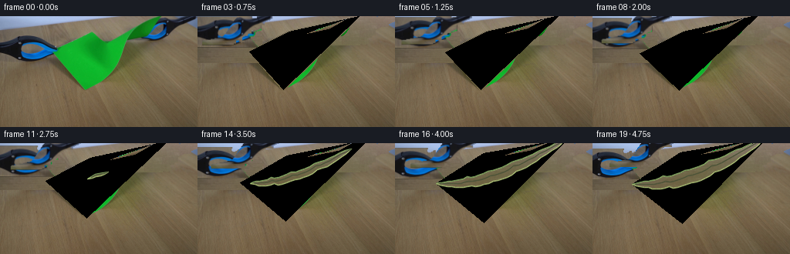
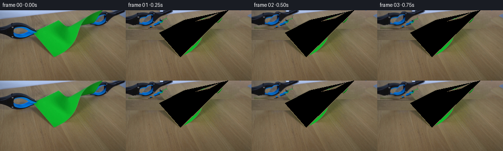
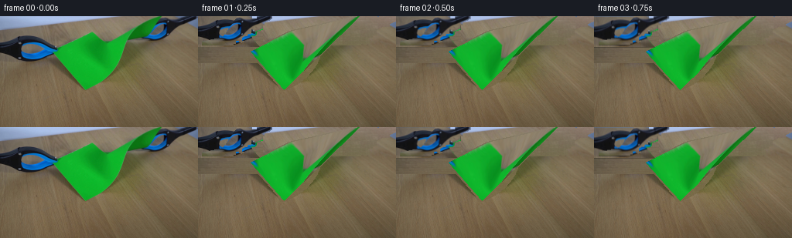
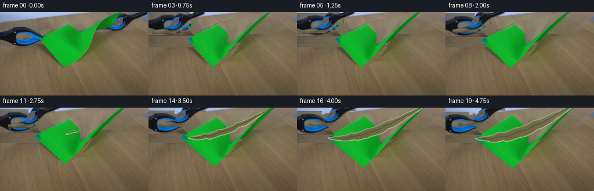
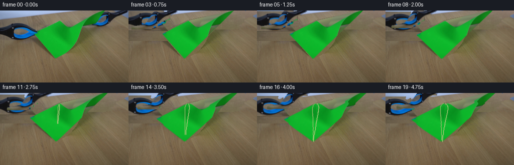
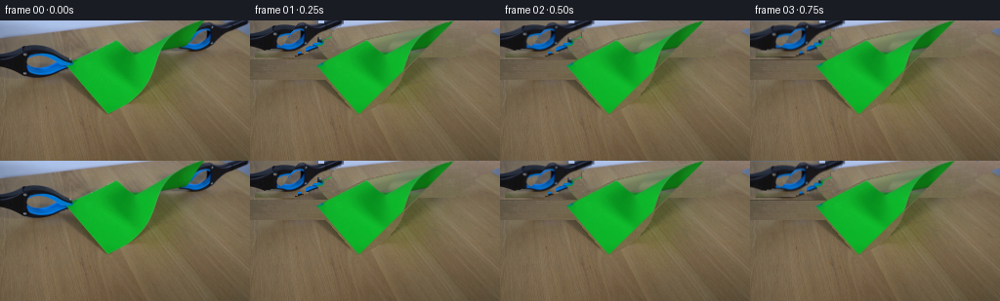
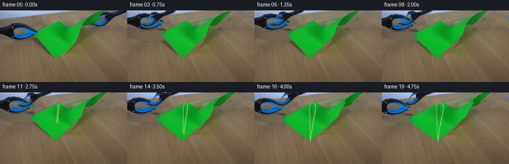
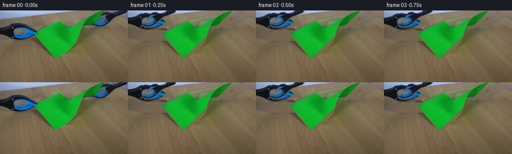
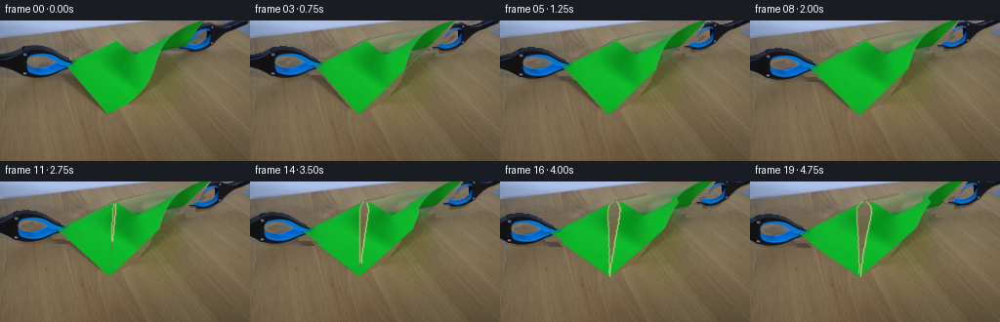

CODING AGENTS AS PIXEL WORLD MODELS
traex/DeepSeek-V4.1-Flash · 0043
点击播放 · 原生 RGB 像素
逐轮保存的候选
回放视频、检查图与代码变化。
每份候选均可单独播放。实际图片检查记录在下方工具轨迹中。
候选 01播放与检查图
点击播放 · 原生 RGB 像素


展开代码变化
--- 上一保存版本
+++ 本次保存版本
@@ -0,0 +1,317 @@
+from pathlib import Path
+
+import cv2
+import numpy as np
+from PIL import Image
+
+import artifact_io
+
+
+CASE_DIR = Path(__file__).resolve().parent
+W, H = 256, 144
+N, FPS = 20, 4
+
+# Paper corners in frame 00: upper, right, lower, left.
+A0 = np.array([118.0, 20.0], dtype=np.float32)
+B0 = np.array([208.0, 0.0], dtype=np.float32)
+C0 = np.array([111.0, 95.0], dtype=np.float32)
+D0 = np.array([68.0, 46.0], dtype=np.float32)
+PAPER_QUAD = np.array([A0, B0, C0, D0], dtype=np.float32)
+
+
+def smoothstep(x):
+ x = np.clip(x, 0.0, 1.0)
+ return x * x * (3.0 - 2.0 * x)
+
+
+def make_background_plate(frame, unknown):
+ """Fit the warm table gradient and borrow its fine grain from the clean lower strip."""
+ yy, xx = np.mgrid[0:H, 0:W]
+ r, g, b = frame[..., 0], frame[..., 1], frame[..., 2]
+ wood_like = (r.astype(np.int16) >= g.astype(np.int16)) & (g.astype(np.int16) >= b.astype(np.int16))
+ clean = wood_like & (unknown == 0)
+ clean[:96] &= (r[:96] > 82)
+
+ x = (xx.astype(np.float64) - 128.0) / 128.0
+ y = (yy.astype(np.float64) - 72.0) / 72.0
+ terms = [
+ np.ones_like(x), x, y, x * x, x * y, y * y,
+ x**3, x * x * y, x * y * y, y**3,
+ x**4, x**3 * y, x * x * y * y, x * y**3, y**4,
+ ]
+ basis = np.stack([t[clean] for t in terms], axis=1)
+ fit = np.zeros((H, W, 3), dtype=np.float64)
+ for channel in range(3):
+ values = frame[..., channel][clean].astype(np.float64)
+ coeff, _, _, _ = np.linalg.lstsq(basis, values, rcond=None)
+ fit[..., channel] = sum(c * t for c, t in zip(coeff, terms))
+
+ residual = frame.astype(np.float64) - fit
+ grain = np.empty((H, W, 3), dtype=np.float64)
+ for y_out in range(H):
+ source_y = 98 + ((y_out * 17 + (y_out // 7) * 11) % 44)
+ source_x = (np.arange(W) + (y_out // 9) * 23) % W
+ grain[y_out] = residual[source_y, source_x]
+
+ plate = np.clip(fit + grain * 0.82, 0, 255).astype(np.uint8)
+ plate = cv2.GaussianBlur(plate, (3, 3), 0.55)
+
+ # Keep untouched pixels exact; replace only the area hidden by the paper and tools.
+ out = frame.copy()
+ alpha = cv2.GaussianBlur(unknown.astype(np.float32), (5, 5), 1.0)
+ alpha = np.clip(alpha * 1.7, 0, 1)[..., None]
+ out = np.clip(plate * alpha + out * (1.0 - alpha), 0, 255).astype(np.uint8)
+ out[unknown == 0] = frame[unknown == 0]
+ return out
+
+
+def make_tool_sprite(frame, box, side):
+ x0, y0, x1, y1 = box
+ crop = frame[y0:y1, x0:x1]
+ rgb = crop.astype(np.int16)
+ r, g, b = rgb[..., 0], rgb[..., 1], rgb[..., 2]
+ spread = rgb.max(axis=2) - rgb.min(axis=2)
+
+ green = (g > r + 13) & (g > b + 13) & (g > 48)
+ blue = (b > g + 12) & (b > r + 22) & (b > 58)
+ dark = (r + g + b < 225)
+ gray = (spread < 31) & (r < 142) & (g < 146) & (b < 158)
+ mask = (blue | dark | gray) & ~green
+
+ # The pale metal arms remain stationary and act as the tool mounts.
+ pale_blue = (b > g + 12) & (r > 72) & (g > 82) & (b > 112)
+ mask &= ~pale_blue
+
+ mask = cv2.morphologyEx(mask.astype(np.uint8), cv2.MORPH_CLOSE, np.ones((3, 3), np.uint8))
+ mask = cv2.morphologyEx(mask, cv2.MORPH_OPEN, np.ones((2, 2), np.uint8))
+
+ count, labels, stats, _ = cv2.connectedComponentsWithStats(mask, 8)
+ kept = np.zeros_like(mask)
+ core = (blue | dark) & ~green
+ for label in range(1, count):
+ if stats[label, cv2.CC_STAT_AREA] < 8:
+ continue
+ component = labels == label
+ if side == "left" and x0 + stats[label, cv2.CC_STAT_LEFT] > x1 - 3:
+ continue
+ if np.count_nonzero(component & core) >= 3:
+ kept[component] = 255
+
+ # Close tiny highlight gaps without turning the surrounding table into tool material.
+ kept = cv2.morphologyEx(kept, cv2.MORPH_CLOSE, np.ones((3, 3), np.uint8))
+ contours, _ = cv2.findContours(kept, cv2.RETR_EXTERNAL, cv2.CHAIN_APPROX_SIMPLE)
+ filled = np.zeros_like(kept)
+ cv2.drawContours(filled, contours, -1, 255, cv2.FILLED)
+ filled = cv2.bitwise_and(filled, cv2.dilate(kept, np.ones((3, 3), np.uint8)))
+ return crop.copy(), filled
+
+
+def make_paper_texture(frame, background):
+ size = 256
+ src = np.array([[0, 0], [size - 1, 0], [size - 1, size - 1], [0, size - 1]], dtype=np.float32)
+ transform = cv2.getPerspectiveTransform(src, PAPER_QUAD)
+ texture = cv2.warpPerspective(frame, transform, (size, size), flags=cv2.INTER_CUBIC)
+
+ rgb = texture.astype(np.int16)
+ r, g, b = rgb[..., 0], rgb[..., 1], rgb[..., 2]
+ green = (g > r + 10) & (g > b + 10) & (g > 40)
+ green = cv2.morphologyEx(green.astype(np.uint8), cv2.MORPH_CLOSE, np.ones((5, 5), np.uint8))
+ green = cv2.dilate(green, np.ones((3, 3), np.uint8))
+
+ # Remove the two jaws and the table showing through their gaps.
+ clean = cv2.inpaint(texture, 255 - green, 5, cv2.INPAINT_TELEA)
+
+ # A restrained bilateral pass keeps the paper grain while suppressing inpaint streaks.
+ clean = cv2.bilateralFilter(clean, 5, 13, 4)
+ return clean
+
+
+def moved_corners(frame_index):
+ if frame_index == 0:
+ return A0.copy(), B0.copy(), C0.copy(), D0.copy(), 0.0, 0.0
+
+ pull = smoothstep((frame_index - 1) / 8.0)
+ if frame_index < 9:
+ tear = 0.0
+ extra = 0.0
+ else:
+ tear = smoothstep((frame_index - 8.0) / 11.0)
+ extra = tear
+
+ d = np.array([-7.0 * pull - 10.0 * extra, 2.5 * pull + 4.5 * extra], dtype=np.float32)
+ b = np.array([7.0 * pull + 10.0 * extra, -2.5 * pull - 4.5 * extra], dtype=np.float32)
+
+ # Poisson contraction and a small amount of gravity sag keep the sheet from looking rigid.
+ axis = B0 - D0
+ axis /= np.linalg.norm(axis)
+ normal = np.array([-axis[1], axis[0]], dtype=np.float32)
+ contraction = 1.2 * pull + 1.4 * tear
+ a = np.array([-0.6 * pull, 0.8 * pull], dtype=np.float32) - normal * 0.38 * contraction
+ c = np.array([0.5 * pull, 0.4 * pull], dtype=np.float32) + normal * 0.38 * contraction
+ return A0 + a, B0 + b, C0 + c, D0 + d, tear, pull
+
+
+def bilinear_paper(u, v, corners):
+ a, b, c, d = corners
+ top = a[None, :] * (1.0 - u[:, None]) + b[None, :] * u[:, None]
+ bottom = d[None, :] * (1.0 - u[:, None]) + c[None, :] * u[:, None]
+ return top * (1.0 - v[:, None]) + bottom * v[:, None]
+
+
+def deform_uv(uv, corners, tear, piece, pull):
+ uv = np.asarray(uv, dtype=np.float32)
+ u, v = uv[:, 0], uv[:, 1]
+ pos = bilinear_paper(u, v, corners)
+
+ # The center bows downward under tension. The effect is visible mostly through the paper shading.
+ sag = (0.9 * pull + 1.2 * tear) * np.sin(np.pi * np.clip(u, 0, 1)) * np.sin(np.pi * np.clip(v, 0, 1))
+ pos[:, 1] += sag
+
+ if tear > 0.001 and piece:
+ t_line = np.clip((u + 1.0 - v) * 0.5, 0.0, 1.0)
+ active_radius = 0.5 * smoothstep(tear * 1.18)
+ active = smoothstep((active_radius - np.abs(t_line - 0.5)) / 0.055 + 0.5)
+ weight = np.maximum(np.sin(np.pi * t_line), 0.0) ** 0.72
+
+ axis = corners[1] - corners[3]
+ axis /= max(np.linalg.norm(axis), 1e-6)
+ normal = np.array([-axis[1], axis[0]], dtype=np.float32)
+ sign = -1.0 if piece == "upper" else 1.0
+ opening = sign * weight * active * (9.0 * tear)
+ pos += opening[:, None] * normal[None, :]
+ pos += (sign * weight * active * 1.5 * tear)[:, None] * axis[None, :]
+ return pos
+
+
+def render_paper(frame, texture, corners, tear, pull):
+ frame_f = frame.astype(np.float32)
+ count = 30
+ t = np.linspace(0.0, 1.0, count)
+ jag = np.sin(np.pi * t) * (
+ 0.012 * np.sin(11.0 * np.pi * t + 0.7)
+ + 0.007 * np.sin(23.0 * np.pi * t + 1.3)
+ + 0.004 * np.sin(41.0 * np.pi * t + 2.1)
+ )
+ boundary_uv = np.stack([t + jag, 1.0 - t + jag], axis=1).astype(np.float32)
+ upper_dest = deform_uv(boundary_uv, corners, tear, "upper", pull)
+ lower_dest = deform_uv(boundary_uv, corners, tear, "lower", pull)
+
+ def draw_fan(anchor_uv, boundary_dest, piece):
+ anchor = deform_uv(np.array([anchor_uv], dtype=np.float32), corners, tear, piece, pull)[0]
+ for i in range(count - 1):
+ p0 = boundary_uv[i]
+ p1 = boundary_uv[i + 1]
+ q0 = boundary_dest[i]
+ q1 = boundary_dest[i + 1]
+ src = np.float32([[anchor_uv[0] * 255.0, anchor_uv[1] * 255.0],
+ [p0[0] * 255.0, p0[1] * 255.0],
+ [p1[0] * 255.0, p1[1] * 255.0]])
+ dst = np.float32([anchor, q0, q1])
+ low = np.maximum(np.floor(dst.min(axis=0) - 1).astype(np.int32), 0)
+ high = np.minimum(np.ceil(dst.max(axis=0) + 1).astype(np.int32), [W, H])
+ if np.any(high <= low):
+ continue
+ origin = low.astype(np.float32)
+ size = tuple((high - low).tolist())
+ matrix = cv2.getAffineTransform(src, dst - origin)
+ warped = cv2.warpAffine(texture, matrix, size, flags=cv2.INTER_LINEAR,
+ borderMode=cv2.BORDER_REPLICATE)
+ triangle = np.zeros((size[1], size[0]), dtype=np.uint8)
+ cv2.fillConvexPoly(triangle, np.round(dst - origin).astype(np.int32), 255,
+ lineType=cv2.LINE_8)
+ mask = triangle > 0
+ target = frame_f[low[1]:high[1], low[0]:high[0]]
+ target[mask] = warped[mask].astype(np.float32)
+
+ draw_fan((0.0, 0.0), upper_dest, "upper")
+ draw_fan((1.0, 1.0), lower_dest, "lower")
+
+ out = np.clip(frame_f, 0, 255).astype(np.uint8)
+
+ # Torn fibers appear first at the center and spread toward the two grips.
+ if tear > 0.002:
+ upper_dest = deform_uv(boundary_uv, corners, tear, "upper", pull)
+ lower_dest = deform_uv(boundary_uv, corners, tear, "lower", pull)
+ separation = np.linalg.norm(upper_dest - lower_dest, axis=1)
+ for i in range(count - 1):
+ if separation[i] < 0.55 and separation[i + 1] < 0.55:
+ continue
+ p0 = np.round(upper_dest[i]).astype(np.int32)
+ p1 = np.round(upper_dest[i + 1]).astype(np.int32)
+ q0 = np.round(lower_dest[i]).astype(np.int32)
+ q1 = np.round(lower_dest[i + 1]).astype(np.int32)
+ cv2.line(out, tuple(p0), tuple(p1), (142, 179, 105), 1, cv2.LINE_AA)
+ cv2.line(out, tuple(q0), tuple(q1), (178, 199, 122), 1, cv2.LINE_AA)
+ if separation[i] > 2.0:
+ mid0 = ((upper_dest[i] + lower_dest[i]) * 0.5).astype(np.int32)
+ mid1 = ((upper_dest[i + 1] + lower_dest[i + 1]) * 0.5).astype(np.int32)
+ cv2.line(out, tuple(mid0), tuple(mid1), (73, 82, 55), 1, cv2.LINE_AA)
+ return out
+
+
+def composite_sprite(frame, sprite, alpha, dx, dy):
+ x0, y0, x1, y1 = sprite_box
+ h, w = alpha.shape
+ matrix = np.float32([[1, 0, dx], [0, 1, dy]])
+ warped_rgb = cv2.warpAffine(sprite, matrix, (W, H), flags=cv2.INTER_LINEAR,
+ borderMode=cv2.BORDER_CONSTANT, borderValue=(0, 0, 0))
+ warped_a = cv2.warpAffine(alpha, matrix, (W, H), flags=cv2.INTER_LINEAR,
+ borderMode=cv2.BORDER_CONSTANT, borderValue=0)
+ a = (warped_a.astype(np.float32) / 255.0)[..., None]
+ out = frame.astype(np.float32) * (1.0 - a) + warped_rgb.astype(np.float32) * a
+ return np.clip(out, 0, 255).astype(np.uint8)
+
+
+def main():
+ first = np.asarray(Image.open(CASE_DIR / "first_frame.png").convert("RGB"), dtype=np.uint8)
+ assert first.shape == (H, W, 3)
+
+ paper_mask = np.zeros((H, W), dtype=np.uint8)
+ cv2.fillPoly(paper_mask, [np.round(PAPER_QUAD).astype(np.int32)], 255)
+ paper_mask = cv2.dilate(paper_mask, np.ones((3, 3), np.uint8))
+
+ global sprite_box
+ left_box = (0, 21, 84, 61)
+ right_box = (160, 0, 256, 38)
+ left_sprite, left_alpha = make_tool_sprite(first, left_box, "left")
+ right_sprite, right_alpha = make_tool_sprite(first, right_box, "right")
+
+ tool_mask = np.zeros((H, W), dtype=np.uint8)
+ sprite_box = left_box
+ y0, y1 = left_box[1], left_box[3]
+ x0, x1 = left_box[0], left_box[2]
+ tool_mask[y0:y1, x0:x1] |= cv2.dilate(left_alpha, np.ones((5, 5), np.uint8))
+ sprite_box = right_box
+ y0, y1 = right_box[1], right_box[3]
+ x0, x1 = right_box[0], right_box[2]
+ tool_mask[y0:y1, x0:x1] |= cv2.dilate(right_alpha, np.ones((5, 5), np.uint8))
+
+ unknown = cv2.bitwise_or(paper_mask, tool_mask)
+ background = make_background_plate(first, unknown)
+ paper_texture = make_paper_texture(first, background)
+
+ frames = []
+ for index in range(N):
+ if index == 0:
+ frames.append(first.copy())
+ continue
+
+ frame = background.copy()
+ a, b, c, d, tear, pull = moved_corners(index)
+ corners = (a, b, c, d)
+ frame = render_paper(frame, paper_texture, corners, tear, pull)
+
+ left_dx, left_dy = d - D0
+ right_dx, right_dy = b - B0
+ frame = composite_sprite(frame, left_sprite, left_alpha, left_dx, left_dy)
+ frame = composite_sprite(frame, right_sprite, right_alpha, right_dx, right_dy)
+ frames.append(frame)
+
+ frames = np.stack(frames).astype(np.uint8)
+ assert frames.shape == (N, H, W, 3)
+ assert np.array_equal(frames[0], first)
+ artifact_io.save(frames, CASE_DIR)
+
+
+if __name__ == "__main__":
+ main()
候选 02播放与检查图
点击播放 · 原生 RGB 像素


展开代码变化
--- 上一保存版本
+++ 本次保存版本
@@ -109,7 +109,7 @@
def make_paper_texture(frame, background):
size = 256
src = np.array([[0, 0], [size - 1, 0], [size - 1, size - 1], [0, size - 1]], dtype=np.float32)
- transform = cv2.getPerspectiveTransform(src, PAPER_QUAD)
+ transform = cv2.getPerspectiveTransform(PAPER_QUAD, src)
texture = cv2.warpPerspective(frame, transform, (size, size), flags=cv2.INTER_CUBIC)
rgb = texture.astype(np.int16)
@@ -268,6 +268,9 @@
paper_mask = np.zeros((H, W), dtype=np.uint8)
cv2.fillPoly(paper_mask, [np.round(PAPER_QUAD).astype(np.int32)], 255)
+ r, g, b = first[..., 0].astype(np.int16), first[..., 1].astype(np.int16), first[..., 2].astype(np.int16)
+ visible_green = (g > r + 18) & (g > b + 18) & (g > 55)
+ paper_mask[visible_green] = 255
paper_mask = cv2.dilate(paper_mask, np.ones((3, 3), np.uint8))
global sprite_box
候选 03播放与检查图
点击播放 · 原生 RGB 像素

展开代码变化
--- 上一保存版本
+++ 本次保存版本
@@ -119,7 +119,7 @@
green = cv2.dilate(green, np.ones((3, 3), np.uint8))
# Remove the two jaws and the table showing through their gaps.
- clean = cv2.inpaint(texture, 255 - green, 5, cv2.INPAINT_TELEA)
+ clean = cv2.inpaint(texture, 255 * (1 - green), 5, cv2.INPAINT_TELEA)
# A restrained bilateral pass keeps the paper grain while suppressing inpaint streaks.
clean = cv2.bilateralFilter(clean, 5, 13, 4)
候选 04播放与检查图
候选 05播放与检查图
点击播放 · 原生 RGB 像素


展开代码变化
--- 上一保存版本
+++ 本次保存版本
@@ -126,6 +126,23 @@
return clean
+def make_paper_alpha(frame):
+ r, g, b = frame[..., 0].astype(np.int16), frame[..., 1].astype(np.int16), frame[..., 2].astype(np.int16)
+ green = ((g > r + 10) & (g > b + 10) & (g > 40)).astype(np.uint8)
+ points = cv2.findNonZero(green)
+ hull = cv2.convexHull(points)
+ full = np.zeros((H, W), dtype=np.uint8)
+ cv2.fillPoly(full, [hull], 255)
+ full = cv2.morphologyEx(full, cv2.MORPH_CLOSE, np.ones((3, 3), np.uint8))
+
+ size = 256
+ src = np.array([[0, 0], [size - 1, 0], [size - 1, size - 1], [0, size - 1]], dtype=np.float32)
+ transform = cv2.getPerspectiveTransform(PAPER_QUAD, src)
+ alpha = cv2.warpPerspective(full, transform, (size, size), flags=cv2.INTER_LINEAR)
+ alpha = cv2.GaussianBlur(alpha, (3, 3), 0.45)
+ return full, alpha
+
+
def moved_corners(frame_index):
if frame_index == 0:
return A0.copy(), B0.copy(), C0.copy(), D0.copy(), 0.0, 0.0
@@ -151,101 +168,83 @@
return A0 + a, B0 + b, C0 + c, D0 + d, tear, pull
-def bilinear_paper(u, v, corners):
- a, b, c, d = corners
- top = a[None, :] * (1.0 - u[:, None]) + b[None, :] * u[:, None]
- bottom = d[None, :] * (1.0 - u[:, None]) + c[None, :] * u[:, None]
- return top * (1.0 - v[:, None]) + bottom * v[:, None]
-
-
-def deform_uv(uv, corners, tear, piece, pull):
- uv = np.asarray(uv, dtype=np.float32)
- u, v = uv[:, 0], uv[:, 1]
- pos = bilinear_paper(u, v, corners)
-
- # The center bows downward under tension. The effect is visible mostly through the paper shading.
- sag = (0.9 * pull + 1.2 * tear) * np.sin(np.pi * np.clip(u, 0, 1)) * np.sin(np.pi * np.clip(v, 0, 1))
- pos[:, 1] += sag
-
- if tear > 0.001 and piece:
- t_line = np.clip((u + 1.0 - v) * 0.5, 0.0, 1.0)
- active_radius = 0.5 * smoothstep(tear * 1.18)
- active = smoothstep((active_radius - np.abs(t_line - 0.5)) / 0.055 + 0.5)
- weight = np.maximum(np.sin(np.pi * t_line), 0.0) ** 0.72
-
- axis = corners[1] - corners[3]
- axis /= max(np.linalg.norm(axis), 1e-6)
- normal = np.array([-axis[1], axis[0]], dtype=np.float32)
- sign = -1.0 if piece == "upper" else 1.0
- opening = sign * weight * active * (9.0 * tear)
- pos += opening[:, None] * normal[None, :]
- pos += (sign * weight * active * 1.5 * tear)[:, None] * axis[None, :]
- return pos
-
-
-def render_paper(frame, texture, corners, tear, pull):
- frame_f = frame.astype(np.float32)
- count = 30
- t = np.linspace(0.0, 1.0, count)
- jag = np.sin(np.pi * t) * (
- 0.012 * np.sin(11.0 * np.pi * t + 0.7)
- + 0.007 * np.sin(23.0 * np.pi * t + 1.3)
- + 0.004 * np.sin(41.0 * np.pi * t + 2.1)
- )
- boundary_uv = np.stack([t + jag, 1.0 - t + jag], axis=1).astype(np.float32)
- upper_dest = deform_uv(boundary_uv, corners, tear, "upper", pull)
- lower_dest = deform_uv(boundary_uv, corners, tear, "lower", pull)
-
- def draw_fan(anchor_uv, boundary_dest, piece):
- anchor = deform_uv(np.array([anchor_uv], dtype=np.float32), corners, tear, piece, pull)[0]
- for i in range(count - 1):
- p0 = boundary_uv[i]
- p1 = boundary_uv[i + 1]
- q0 = boundary_dest[i]
- q1 = boundary_dest[i + 1]
- src = np.float32([[anchor_uv[0] * 255.0, anchor_uv[1] * 255.0],
- [p0[0] * 255.0, p0[1] * 255.0],
- [p1[0] * 255.0, p1[1] * 255.0]])
- dst = np.float32([anchor, q0, q1])
- low = np.maximum(np.floor(dst.min(axis=0) - 1).astype(np.int32), 0)
- high = np.minimum(np.ceil(dst.max(axis=0) + 1).astype(np.int32), [W, H])
- if np.any(high <= low):
- continue
- origin = low.astype(np.float32)
- size = tuple((high - low).tolist())
- matrix = cv2.getAffineTransform(src, dst - origin)
- warped = cv2.warpAffine(texture, matrix, size, flags=cv2.INTER_LINEAR,
- borderMode=cv2.BORDER_REPLICATE)
- triangle = np.zeros((size[1], size[0]), dtype=np.uint8)
- cv2.fillConvexPoly(triangle, np.round(dst - origin).astype(np.int32), 255,
- lineType=cv2.LINE_8)
- mask = triangle > 0
- target = frame_f[low[1]:high[1], low[0]:high[0]]
- target[mask] = warped[mask].astype(np.float32)
-
- draw_fan((0.0, 0.0), upper_dest, "upper")
- draw_fan((1.0, 1.0), lower_dest, "lower")
-
- out = np.clip(frame_f, 0, 255).astype(np.uint8)
-
- # Torn fibers appear first at the center and spread toward the two grips.
- if tear > 0.002:
- upper_dest = deform_uv(boundary_uv, corners, tear, "upper", pull)
- lower_dest = deform_uv(boundary_uv, corners, tear, "lower", pull)
- separation = np.linalg.norm(upper_dest - lower_dest, axis=1)
- for i in range(count - 1):
- if separation[i] < 0.55 and separation[i + 1] < 0.55:
- continue
- p0 = np.round(upper_dest[i]).astype(np.int32)
- p1 = np.round(upper_dest[i + 1]).astype(np.int32)
- q0 = np.round(lower_dest[i]).astype(np.int32)
- q1 = np.round(lower_dest[i + 1]).astype(np.int32)
- cv2.line(out, tuple(p0), tuple(p1), (142, 179, 105), 1, cv2.LINE_AA)
- cv2.line(out, tuple(q0), tuple(q1), (178, 199, 122), 1, cv2.LINE_AA)
- if separation[i] > 2.0:
- mid0 = ((upper_dest[i] + lower_dest[i]) * 0.5).astype(np.int32)
- mid1 = ((upper_dest[i + 1] + lower_dest[i + 1]) * 0.5).astype(np.int32)
- cv2.line(out, tuple(mid0), tuple(mid1), (73, 82, 55), 1, cv2.LINE_AA)
+def render_paper(frame, texture, alpha_texture, corners, tear, pull):
+ uv_quad = np.array([[0, 0], [255, 0], [255, 255], [0, 255]], dtype=np.float32)
+ target = np.stack(corners).astype(np.float32)
+ forward = cv2.getPerspectiveTransform(uv_quad, target)
+ inverse = np.linalg.inv(forward)
+
+ yy, xx = np.mgrid[0:H, 0:W]
+ dest = np.stack([xx.ravel(), yy.ravel(), np.ones(H * W)], axis=1).astype(np.float32)
+ uv = dest @ inverse.T
+ uv = uv[:, :2] / np.maximum(uv[:, 2:3], 1e-6)
+ u = np.clip(uv[:, 0] / 255.0, -0.2, 1.2)
+ v = np.clip(uv[:, 1] / 255.0, -0.2, 1.2)
+ line = v - u
+ along = np.clip((u + v) * 0.5, 0.0, 1.0)
+
+ active_radius = 0.5 * smoothstep(tear * 1.2)
+ active = smoothstep((active_radius - np.abs(line)) / 0.065 + 0.5)
+ weight = np.maximum(np.sin(np.pi * along), 0.0) ** 0.7
+ opening = 7.5 * tear * weight * active
+
+ tear_vec = target[2] - target[0]
+ tear_vec /= max(np.linalg.norm(tear_vec), 1e-6)
+ normal = np.array([-tear_vec[1], tear_vec[0]], dtype=np.float32)
+ normal *= 1.0 if normal[1] > 0 else -1.0
+
+ out = frame.astype(np.float32)
+ map_x = xx.ravel().astype(np.float32)
+ map_y = yy.ravel().astype(np.float32)
+ maps = []
+ masks = []
+ for side in (-1.0, 1.0):
+ shifted_x = map_x + side * opening * normal[0]
+ shifted_y = map_y + side * opening * normal[1]
+ shifted = np.stack([shifted_x, shifted_y, np.ones_like(shifted_x)], axis=1)
+ suv = shifted @ inverse.T
+ suv = suv[:, :2] / np.maximum(suv[:, 2:3], 1e-6)
+ maps.append((suv[:, 0].reshape(H, W).astype(np.float32),
+ suv[:, 1].reshape(H, W).astype(np.float32)))
+ side_mask = (line * side > -0.008).reshape(H, W)
+ masks.append(side_mask)
+
+ for (map_x_piece, map_y_piece), side_mask in zip(maps, masks):
+ piece_rgb = cv2.remap(texture, map_x_piece, map_y_piece, cv2.INTER_LINEAR,
+ borderMode=cv2.BORDER_REPLICATE)
+ piece_alpha = cv2.remap(alpha_texture, map_x_piece, map_y_piece, cv2.INTER_LINEAR,
+ borderMode=cv2.BORDER_CONSTANT, borderValue=0)
+ valid = (u.reshape(H, W) >= -0.01) & (u.reshape(H, W) <= 1.01)
+ valid &= (v.reshape(H, W) >= -0.01) & (v.reshape(H, W) <= 1.01)
+ a = (piece_alpha.astype(np.float32) / 255.0) * side_mask * valid
+ a = cv2.GaussianBlur(a, (3, 3), 0.45)[..., None]
+ out = out * (1.0 - a) + piece_rgb.astype(np.float32) * a
+
+ out = np.clip(out, 0, 255).astype(np.uint8)
+ if tear > 0.01:
+ count = 34
+ for side in (-1.0, 1.0):
+ for i in range(count):
+ t0 = i / count
+ t1 = (i + 1) / count
+ jitter0 = 0.004 * np.sin(37.0 * t0 + side)
+ jitter1 = 0.004 * np.sin(37.0 * t1 + side)
+ p0 = cv2.perspectiveTransform(
+ np.float32([[[255 * t0 + jitter0 * 255, 255 * t0 + jitter0 * 255]]]),
+ forward,
+ )[0, 0]
+ p1 = cv2.perspectiveTransform(
+ np.float32([[[255 * t1 + jitter1 * 255, 255 * t1 + jitter1 * 255]]]),
+ forward,
+ )[0, 0]
+ separation = 7.5 * tear * (max(np.sin(np.pi * (t0 + t1) * 0.5), 0.0) ** 0.7)
+ if separation < 0.7:
+ continue
+ p0 = p0 + side * separation * normal
+ p1 = p1 + side * separation * normal
+ color = (153, 185, 108) if side < 0 else (182, 202, 126)
+ cv2.line(out, tuple(np.round(p0).astype(np.int32)),
+ tuple(np.round(p1).astype(np.int32)), color, 1, cv2.LINE_AA)
return out
@@ -292,6 +291,7 @@
unknown = cv2.bitwise_or(paper_mask, tool_mask)
background = make_background_plate(first, unknown)
paper_texture = make_paper_texture(first, background)
+ _, paper_alpha = make_paper_alpha(first)
frames = []
for index in range(N):
@@ -302,7 +302,7 @@
frame = background.copy()
a, b, c, d, tear, pull = moved_corners(index)
corners = (a, b, c, d)
- frame = render_paper(frame, paper_texture, corners, tear, pull)
+ frame = render_paper(frame, paper_texture, paper_alpha, corners, tear, pull)
left_dx, left_dy = d - D0
right_dx, right_dy = b - B0
候选 06播放与检查图
点击播放 · 原生 RGB 像素

展开代码变化
--- 上一保存版本
+++ 本次保存版本
@@ -70,13 +70,10 @@
crop = frame[y0:y1, x0:x1]
rgb = crop.astype(np.int16)
r, g, b = rgb[..., 0], rgb[..., 1], rgb[..., 2]
- spread = rgb.max(axis=2) - rgb.min(axis=2)
-
green = (g > r + 13) & (g > b + 13) & (g > 48)
blue = (b > g + 12) & (b > r + 22) & (b > 58)
- dark = (r + g + b < 225)
- gray = (spread < 31) & (r < 142) & (g < 146) & (b < 158)
- mask = (blue | dark | gray) & ~green
+ dark = (r + g + b < 238)
+ mask = (blue | dark) & ~green
# The pale metal arms remain stationary and act as the tool mounts.
pale_blue = (b > g + 12) & (r > 72) & (g > 82) & (b > 112)
@@ -99,11 +96,14 @@
# Close tiny highlight gaps without turning the surrounding table into tool material.
kept = cv2.morphologyEx(kept, cv2.MORPH_CLOSE, np.ones((3, 3), np.uint8))
- contours, _ = cv2.findContours(kept, cv2.RETR_EXTERNAL, cv2.CHAIN_APPROX_SIMPLE)
- filled = np.zeros_like(kept)
- cv2.drawContours(filled, contours, -1, 255, cv2.FILLED)
- filled = cv2.bitwise_and(filled, cv2.dilate(kept, np.ones((3, 3), np.uint8)))
- return crop.copy(), filled
+ # Fill only enclosed highlight holes; the open jaw gap stays transparent.
+ flood = kept.copy()
+ flood_mask = np.zeros((flood.shape[0] + 2, flood.shape[1] + 2), np.uint8)
+ cv2.floodFill(flood, flood_mask, (0, 0), 255)
+ holes = cv2.bitwise_not(flood)
+ alpha = cv2.bitwise_or(kept, holes)
+ alpha = cv2.bitwise_and(alpha, cv2.dilate(kept, np.ones((5, 5), np.uint8)))
+ return crop.copy(), alpha
def make_paper_texture(frame, background):
候选 07播放与检查图
点击播放 · 原生 RGB 像素


展开代码变化
--- 上一保存版本
+++ 本次保存版本
@@ -248,17 +248,24 @@
return out
-def composite_sprite(frame, sprite, alpha, dx, dy):
- x0, y0, x1, y1 = sprite_box
+def composite_sprite(frame, sprite, alpha, origin, dx, dy):
+ x0, y0, _, _ = origin
+ matrix = np.float32([[1, 0, dx], [0, 1, dy]])
+ shift_x = int(np.floor(x0 + dx))
+ shift_y = int(np.floor(y0 + dy))
h, w = alpha.shape
- matrix = np.float32([[1, 0, dx], [0, 1, dy]])
- warped_rgb = cv2.warpAffine(sprite, matrix, (W, H), flags=cv2.INTER_LINEAR,
- borderMode=cv2.BORDER_CONSTANT, borderValue=(0, 0, 0))
- warped_a = cv2.warpAffine(alpha, matrix, (W, H), flags=cv2.INTER_LINEAR,
- borderMode=cv2.BORDER_CONSTANT, borderValue=0)
- a = (warped_a.astype(np.float32) / 255.0)[..., None]
- out = frame.astype(np.float32) * (1.0 - a) + warped_rgb.astype(np.float32) * a
- return np.clip(out, 0, 255).astype(np.uint8)
+ low_x, low_y = max(shift_x, 0), max(shift_y, 0)
+ high_x, high_y = min(shift_x + w, W), min(shift_y + h, H)
+ if high_x <= low_x or high_y <= low_y:
+ return frame
+ source_x0, source_y0 = low_x - shift_x, low_y - shift_y
+ source_x1, source_y1 = source_x0 + high_x - low_x, source_y0 + high_y - low_y
+ rgb = sprite[source_y0:source_y1, source_x0:source_x1]
+ a = alpha[source_y0:source_y1, source_x0:source_x1].astype(np.float32)[..., None] / 255.0
+ target = frame[low_y:high_y, low_x:high_x].astype(np.float32)
+ out = frame.copy()
+ out[low_y:high_y, low_x:high_x] = np.clip(target * (1.0 - a) + rgb.astype(np.float32) * a, 0, 255).astype(np.uint8)
+ return out
def main():
@@ -272,18 +279,15 @@
paper_mask[visible_green] = 255
paper_mask = cv2.dilate(paper_mask, np.ones((3, 3), np.uint8))
- global sprite_box
left_box = (0, 21, 84, 61)
right_box = (160, 0, 256, 38)
left_sprite, left_alpha = make_tool_sprite(first, left_box, "left")
right_sprite, right_alpha = make_tool_sprite(first, right_box, "right")
tool_mask = np.zeros((H, W), dtype=np.uint8)
- sprite_box = left_box
y0, y1 = left_box[1], left_box[3]
x0, x1 = left_box[0], left_box[2]
tool_mask[y0:y1, x0:x1] |= cv2.dilate(left_alpha, np.ones((5, 5), np.uint8))
- sprite_box = right_box
y0, y1 = right_box[1], right_box[3]
x0, x1 = right_box[0], right_box[2]
tool_mask[y0:y1, x0:x1] |= cv2.dilate(right_alpha, np.ones((5, 5), np.uint8))
@@ -306,8 +310,8 @@
left_dx, left_dy = d - D0
right_dx, right_dy = b - B0
- frame = composite_sprite(frame, left_sprite, left_alpha, left_dx, left_dy)
- frame = composite_sprite(frame, right_sprite, right_alpha, right_dx, right_dy)
+ frame = composite_sprite(frame, left_sprite, left_alpha, left_box, left_dx, left_dy)
+ frame = composite_sprite(frame, right_sprite, right_alpha, right_box, right_dx, right_dy)
frames.append(frame)
frames = np.stack(frames).astype(np.uint8)
候选 08播放与检查图
候选 09播放与检查图
点击播放 · 原生 RGB 像素

展开代码变化
--- 上一保存版本
+++ 本次保存版本
@@ -196,8 +196,11 @@
out = frame.astype(np.float32)
map_x = xx.ravel().astype(np.float32)
map_y = yy.ravel().astype(np.float32)
+ tex_y, tex_x = np.mgrid[0:alpha_texture.shape[0], 0:alpha_texture.shape[1]]
+ texture_line = tex_y.astype(np.float32) - tex_x.astype(np.float32)
maps = []
masks = []
+ alphas = []
for side in (-1.0, 1.0):
shifted_x = map_x + side * opening * normal[0]
shifted_y = map_y + side * opening * normal[1]
@@ -208,11 +211,14 @@
suv[:, 1].reshape(H, W).astype(np.float32)))
side_mask = (line * side > -0.008).reshape(H, W)
masks.append(side_mask)
-
- for (map_x_piece, map_y_piece), side_mask in zip(maps, masks):
+ piece_alpha = alpha_texture * (texture_line * side > -0.8)
+ piece_alpha = cv2.GaussianBlur(piece_alpha, (3, 3), 0.35)
+ alphas.append(piece_alpha)
+
+ for (map_x_piece, map_y_piece), side_mask, piece_alpha_source in zip(maps, masks, alphas):
piece_rgb = cv2.remap(texture, map_x_piece, map_y_piece, cv2.INTER_LINEAR,
borderMode=cv2.BORDER_REPLICATE)
- piece_alpha = cv2.remap(alpha_texture, map_x_piece, map_y_piece, cv2.INTER_LINEAR,
+ piece_alpha = cv2.remap(piece_alpha_source, map_x_piece, map_y_piece, cv2.INTER_LINEAR,
borderMode=cv2.BORDER_CONSTANT, borderValue=0)
valid = (u.reshape(H, W) >= -0.01) & (u.reshape(H, W) <= 1.01)
valid &= (v.reshape(H, W) >= -0.01) & (v.reshape(H, W) <= 1.01)
可观测工具轨迹
实际执行的命令与返回图片。
命令 1exit 0
/bin/bash -c "pwd && rg --files -g 'prompt.txt' -g 'GENERATION_RULES.md' -g 'first_frame.png' -g '*' | sed -n '1,160p'"
命令 2exit 0
/bin/bash -c "sed -n '1,240p' prompt.txt"
命令 3exit 0
/bin/bash -c "sed -n '1,280p' GENERATION_RULES.md"
命令 4exit 127
/bin/bash -c "file first_frame.png && python3 - <<'PY'
from PIL import Image
im=Image.open('first_frame.png')
print(im.size, im.mode)
print(im.getbbox())
PY"命令 5exit 0
/bin/bash -c "sed -n '1,260p' artifact_io.py"
命令 6exit 0
/bin/bash -c "sed -n '1,260p' player_template.html"
命令 7exit 0
/bin/bash -c "python3 - <<'PY'
from PIL import Image
import numpy as np
im=np.asarray(Image.open('first_frame.png').convert('RGB'))
print('shape', im.shape)
print('global mean', im.reshape(-1,3).mean(0), 'min', im.reshape(-1,3).min(0), 'max', im.reshape(-1,3).max(0))
# color samples grid
for y in [0,12,24,36,48,60,72,84,96,108,120,132,143]:
print(y, [tuple(im[y,x]) for x in [0,32,64,96,128,160,192,224,255]])
# green candidate
r,g,b=[im[:,:,i] for i in range(3)]
mask=(g.astype(int)>r.astype(int)+8)&(g.astype(int)>b.astype(int)+5)
ys,xs=np.where(mask)
print('green count',len(xs),'bbox',(xs.min(),ys.min(),xs.max(),ys.max()) if len(xs) else None,'mean',im[mask].mean(0) if len(xs) else None)
# dark blue candidate
mask2=(b.astype(int)>r.astype(int)+8)&(b.astype(int)>g.astype(int)+3)&(b<160)
ys,xs=np.where(mask2)
print('blue count',len(xs),'bbox',(xs.min(),ys.min(),xs.max(),ys.max()) if len(xs) else None,'mean',im[mask2].mean(0) if len(xs) else None)
# quantized top colors
q=(im//16)*16
vals,cnt=np.unique(q.reshape(-1,3),axis=0,return_counts=True)
ix=np.argsort(cnt)[-20:][::-1]
for i in ix: print(cnt[i], tuple(vals[i]))
PY"命令 8exit 0
/bin/bash -c "python3 - <<'PY'
from PIL import Image
import numpy as np
im=np.asarray(Image.open('first_frame.png').convert('RGB')).astype(int)
r,g,b=im[:,:,0],im[:,:,1],im[:,:,2]
green=(g>r+25)&(g>b+25)&(g>70)
blue=(b>r+20)&(b>g+8)&(b>55)
dark=(r+g+b<150)
pale=(b>r+15)&(r>90)&(g>100)
wood=(r>g)&(g>=b)&(r>75)&(~green)
# print 128x72 by selecting central pixel or class majority in 2x2
for Y in range(0,144,2):
s=''
for X in range(0,256,2):
sl=np.s_[Y:Y+2,X:X+2]
counts=[green[sl].sum(),blue[sl].sum(),dark[sl].sum(),pale[sl].sum(),wood[sl].sum()]
if max(counts)==0: c='?'
else: c='GBDpW'[int(np.argmax(counts))]
s+=c
print(f'{Y:3d} '+s)
PY"命令 9exit 0
/bin/bash -c "python3 - <<'PY'
from PIL import Image
import numpy as np
im=np.asarray(Image.open('first_frame.png').convert('RGB')).astype(int)
r,g,b=im[:,:,0],im[:,:,1],im[:,:,2]
green=(g>r+20)&(g>b+20)&(g>60)
blue=(b>r+25)&(b>g+8)&(b>50)
dark=(r+g+b<180)
for y in range(0,110,4):
def runs(m):
xs=np.flatnonzero(m[y]); out=[]
if len(xs):
st=pr=xs[0]
for x in xs[1:]:
if x>pr+1: out.append((st,pr)); st=x
pr=x
out.append((st,pr))
return out
print(f'y={y:3d} G{runs(green)} B{runs(blue)} D{runs(dark)}')
PY"命令 10exit 0
/bin/bash -c "python3 - <<'PY'
from PIL import Image
im=Image.open('first_frame.png')
im.resize((1024,576), Image.Resampling.NEAREST).save('.tmp/first_zoom.png')
PY"命令 11exit 0
/bin/bash -c "python3 - <<'PY'
try:
import cv2; print('cv2',cv2.__version__)
except Exception as e: print('no cv2',e)
try:
import scipy; print('scipy',scipy.__version__)
except Exception as e: print('no scipy',e)
try:
import imageio; print('imageio',imageio.__version__)
except Exception as e: print('no imageio',e)
PY"命令 12exit 0
/bin/bash -c "python3 - <<'PY'
from PIL import Image
import numpy as np, cv2
im=np.asarray(Image.open('first_frame.png').convert('RGB')).astype(np.int16)
r,g,b=im[:,:,0],im[:,:,1],im[:,:,2]
# classes by nearest rough centers sampled
centers={'green':(20,170,45),'blue':(10,105,180),'dark':(20,22,28),'paleblue':(155,175,210),'tan':(120,105,80),'white':(170,165,150)}
# nearest normalized? print class components
for name,c in centers.items():
d=((im-np.array(c))**2).sum(2)
cls=np.argmin(np.stack([((im-np.array(v))**2).sum(2) for v in centers.values()]),0)
# simple hue-ish classification
masks={
'green':(g>r+18)&(g>b+18)&(g>55),
'blue':(b>r+20)&(b>g+5)&(b>55),
'dark':(r+g+b<180),
'pale':(r>135)&(g>145)&(b>160),
'tan':(r>g)&(g>b)&(r>80)&(g>65),
}
for name,m in masks.items():
n,lab,stats,cent=cv2.connectedComponentsWithStats(m.astype(np.uint8),8)
comps=sorted([(int(stats[i,4]),tuple(map(int,stats[i,:4])),tuple(np.round(cent[i],1))) for i in range(1,n)],reverse=True)
print('\\n',name,'pixels',int(m.sum()),'components',len(comps))
print(comps[:20])
# print dominant exact/quant colors around areas
for box in [(0,0,80,80),(170,0,256,80),(60,0,210,100),(0,0,256,144)]:
x0,y0,x1,y1=box
a=im[y0:y1,x0:x1]
q=(a//8)*8
vals,cnt=np.unique(q.reshape(-1,3),axis=0,return_counts=True)
ix=np.argsort(cnt)[-12:][::-1]
print('\\nbox',box)
for i in ix: print(cnt[i],tuple(vals[i]))
PY"命令 13exit 0
/bin/bash -c "python3 - <<'PY'
from PIL import Image
import numpy as np, cv2
im=np.asarray(Image.open('first_frame.png').convert('RGB'))
# output candidate bounding masks to text, plus green shape boundary and blue objects
r,g,b=im[:,:,0].astype(int),im[:,:,1].astype(int),im[:,:,2].astype(int)
green=(g>r+18)&(g>b+18)&(g>55)
# green edge pixels + ranges, print selected every y
for y in range(0,97):
xs=np.flatnonzero(green[y])
if len(xs):
# contiguous runs
st=pr=xs[0]; runs=[]
for x in xs[1:]:
if x>pr+1:runs.append((st,pr));st=x
pr=x
runs.append((st,pr))
if y%2==0: print(y,runs)
PY"命令 14exit 0
/bin/bash -c "python3 - <<'PY'
from PIL import Image
import numpy as np
im=np.asarray(Image.open('first_frame.png').convert('RGB')).astype(int)
r,g,b=im[:,:,0],im[:,:,1],im[:,:,2]
# classes with thresholds for ROI ascii, 1 char per 2x2
for name,box in [('LEFT',(0,20,100,70)),('RIGHT',(155,0,256,40)),('PAPER',(60,0,215,105))]:
x0,y0,x1,y1=box
print('\\n'+name)
for y in range(y0,y1,2):
s=''
for x in range(x0,x1,2):
rr,gg,bb=im[y:y+2,x:x+2].reshape(-1,3).mean(0)
if gg>rr+20 and gg>bb+20 and gg>55: c='G'
elif rr+gg+bb<170: c='K'
elif bb>rr+22 and bb>gg+5 and bb>55: c='B'
elif rr>150 and gg>160 and bb>180: c='p'
elif rr>gg+4 and gg>bb+4: c='w'
else: c='.'
s+=c
print(f'{y:3d} {s}')
PY"命令 15exit 0
/bin/bash -c "python3 - <<'PY'
from PIL import Image
import numpy as np, cv2
im=np.asarray(Image.open('first_frame.png').convert('RGB')).astype(np.int16)
r,g,b=im[:,:,0],im[:,:,1],im[:,:,2]
m=((g>r+18)&(g>b+18)&(g>55)).astype(np.uint8)
# keep main component
n,lab,stats,cen=cv2.connectedComponentsWithStats(m,8)
m=(lab==1+np.argmax(stats[1:,4])).astype(np.uint8)
pts=cv2.findNonZero(m)
for eps in [2,4,8]:
ap=cv2.approxPolyDP(cv2.convexHull(pts),eps,True)
print('eps',eps,ap[:,0].tolist())
rect=cv2.minAreaRect(pts)
print('minrect',rect, cv2.boxPoints(rect).tolist())
# corners via extremes of x+y,x-y,y
for op in ['x+y','x-y','y','x']:
x,y=pts[:,0,0],pts[:,0,1]
if op=='x+y': i=np.argmax(x+y)
elif op=='x-y': i=np.argmax(x-y)
elif op=='y': i=np.argmax(y)
else:i=np.argmin(x)
print(op,int(x[i]),int(y[i]))
PY"命令 16exit 0
/bin/bash -c "python3 - <<'PY'
from PIL import Image
import numpy as np, cv2
im=np.asarray(Image.open('first_frame.png').convert('RGB')).astype(np.int16)
r,g,b=im[:,:,0],im[:,:,1],im[:,:,2]
m=((g>r+18)&(g>b+18)&(g>55)).astype(np.uint8)
n,lab,stats,cen=cv2.connectedComponentsWithStats(m,8)
m=(lab==1+np.argmax(stats[1:,4])).astype(np.uint8)
# quad known corners: A=(118,20) top-left? B=(208,0) top-right, C=(111,95) bottom, D=(68,46) left
# fit homography to sample all
src=np.float32([[0,0],[100,0],[100,100],[0,100]])
dst=np.float32([[118,20],[208,0],[111,95],[68,46]])
H=cv2.getPerspectiveTransform(src,dst)
# print row ranges per warped coordinate grid
for yy in range(0,101,10):
pts=np.float32([[[x,yy] for x in range(0,101,10)]])
q=cv2.perspectiveTransform(pts,H)[0]
print(yy, [(round(float(x),1),round(float(y),1)) for x,y in q])
# grayscale etc values on paper
print('paper mean',im[m>0].mean(0))
# residual of nearest paper colors
for y in [30,40,50,60,70,80,90]:
xs=np.flatnonzero(m[y]); print(y,xs.min(),xs.max(), im[y,xs.min():xs.max()+1].mean(0), im[y,xs.min():xs.max()+1].std(0))
PY"命令 17exit 0
/bin/bash -c "python3 - <<'PY'
from PIL import Image
import numpy as np
im=np.asarray(Image.open('first_frame.png').convert('RGB')).astype(int)
# pixel and color ranges around green paper top area
for y in [0,2,4,6,8,10,12,14,16,18,20,22,24,26,28,30]:
print('y',y)
print(' '.join(f'{x}:{tuple(im[y,x])}' for x in range(60,230,10)))
PY"命令 18exit 0
/bin/bash -c "python3 - <<'PY'
from PIL import Image
import numpy as np
im=np.asarray(Image.open('first_frame.png').convert('RGB')).astype(int)
r,g,b=im[:,:,0],im[:,:,1],im[:,:,2]
# print quantized values in ROI x=0..80,y=25..60 every pixel as symbol based on coarse color centers
centers={
'g':np.array([15,170,40]), 'b':np.array([5,105,190]), 'k':np.array([20,22,28]), 'w':np.array([125,110,85]),
'W':np.array([145,132,110]), 'p':np.array([165,185,220]), 't':np.array([90,90,80]),
}
cs=list(centers.values()); names=list(centers)
for y in range(25,61):
s=''
for x in range(0,90):
c=im[y,x]
ds=[((c-v)**2).sum() for v in cs]
s+=names[int(np.argmin(ds))]
print(f'{y:3d} {s}')
PY"命令 19exit 0
/bin/bash -c "python3 - <<'PY'
from PIL import Image
import numpy as np
im=np.asarray(Image.open('first_frame.png').convert('RGB')).astype(int)
r,g,b=im[:,:,0],im[:,:,1],im[:,:,2]
# blue components print each component bbox and values mean median
import cv2
m=((b>r+20)&(b>g+5)&(b>55)).astype(np.uint8)
n,lab,stats,cen=cv2.connectedComponentsWithStats(m,8)
for i in range(1,n):
if stats[i,4]<20: continue
x,y,w,h,a=stats[i]
vals=im[lab==i]
print(i,'bbox',x,y,w,h,'area',a,'mean',vals.mean(0),'med',np.median(vals,0),'min',vals.min(0),'max',vals.max(0))
PY"命令 20exit 0
/bin/bash -c "python3 - <<'PY'
from PIL import Image
import numpy as np, cv2
im=np.asarray(Image.open('first_frame.png').convert('RGB')).astype(np.int16)
# corners in normalized orientation: TL,TR,BR,BL
src=np.float32([[0,0],[1,0],[1,1],[0,1]])
dst=np.float32([[118,20],[208,0],[111,95],[68,46]])
H=cv2.getPerspectiveTransform(src,dst)
Hi=np.linalg.inv(H)
# warp into 100x100
out=cv2.warpPerspective(im.astype(np.uint8),Hi,(100,100),flags=cv2.INTER_LINEAR)
Image.fromarray(out).save('.tmp/paper_texture.png')
# ascii based on nearest semantic class, 2x2 -> 50 chars
centers={'g':np.array([15,175,42]),'G':np.array([15,120,25]),'s':np.array([90,130,80]),'k':np.array([20,25,30]),'b':np.array([5,105,190]),'w':np.array([125,112,88])}
names=list(centers); cs=list(centers.values())
for y in range(0,100,2):
s=''
for x in range(0,100,2):
c=out[y:y+2,x:x+2].reshape(-1,3).mean(0)
ds=[((c-v)**2).sum() for v in cs]
s+=names[int(np.argmin(ds))]
print(s)
print('corners sampling')
for uv in [(0,0),(.5,0),(1,0),(0,.5),(.5,.5),(1,.5),(0,1),(.5,1),(1,1)]:
x,y=uv
print(uv,out[min(99,int(y*100)),min(99,int(x*100))])
PY"命令 21exit 0
/bin/bash -c "python3 - <<'PY'
from PIL import Image
import numpy as np, cv2
im=np.asarray(Image.open('first_frame.png').convert('RGB')).astype(np.int16)
r,g,b=im[:,:,0],im[:,:,1],im[:,:,2]
m=((g>r+18)&(g>b+18)&(g>55)).astype(np.uint8)
n,lab,stats,cen=cv2.connectedComponentsWithStats(m,8)
m=(lab==1+np.argmax(stats[1:,4])).astype(np.uint8)
# fit hull
pts=cv2.findNonZero(m); hull=cv2.convexHull(pts)
print('hull',hull[:,0].tolist())
# test homography source orientation A=(118,20), B=(208,0), C=(111,95), D=(68,46)
src=np.float32([[0,0],[100,0],[100,100],[0,100]])
dst=np.float32([[118,20],[208,0],[111,95],[68,46]])
H=cv2.getPerspectiveTransform(src,dst)
Hi=np.linalg.inv(H)
# inverse project every actual paper pixel to source coords, collect bbox and samples
for x,y in [(118,20),(208,0),(111,95),(68,46)]:
print('corner',x,y,'rgb',im[y,x])
# sample center and corners colors
for u,v in [(5,5),(50,5),(95,5),(5,50),(50,50),(95,50),(5,95),(50,95),(95,95),(20,20),(80,20),(20,80),(80,80)]:
p=cv2.perspectiveTransform(np.float32([[[u,v]]]),H)[0,0]
x,y=np.round(p).astype(int)
print((u,v),'->',p,'rgb',im[y,x])
PY"命令 22exit 0
/bin/bash -c "python3 - <<'PY'
from PIL import Image
import numpy as np, cv2
im=np.asarray(Image.open('first_frame.png').convert('RGB')).astype(np.int16)
r,g,b=im[:,:,0],im[:,:,1],im[:,:,2]
m=((g>r+18)&(g>b+18)&(g>55)).astype(np.uint8)
n,lab,stats,cen=cv2.connectedComponentsWithStats(m,8); m=(lab==1+np.argmax(stats[1:,4])).astype(np.uint8)
pts=cv2.findNonZero(m)
# try specific corner order based on desired rectangle aspect ratio 1.45 (width 110, height 76)
# hull A=(118,20), B=(208,0), C=(111,95), D=(68,46)
for order in [
[(118,20),(208,0),(111,95),(68,46)],
[(208,0),(118,20),(68,46),(111,95)],
[(118,20),(68,46),(111,95),(208,0)],
]:
dst=np.float32(order);
# edge lengths
print(order, np.linalg.norm(dst[1]-dst[0]),np.linalg.norm(dst[2]-dst[1]),np.linalg.norm(dst[3]-dst[2]),np.linalg.norm(dst[0]-dst[3]))
# green only stats by x/y
ys,xs=np.where(m)
print('bbox',xs.min(),xs.max(),ys.min(),ys.max())
# color hist green core vs edges
core=(m>0)&(cv2.erode(m,np.ones((5,5),np.uint8))>0)
edge=(m>0)&~core
print('core mean/std',im[core].mean(0),im[core].std(0))
print('edge mean/std',im[edge].mean(0),im[edge].std(0))
# compute row green median colors central pixels
for y in [10,20,30,40,50,60,70,80,90]:
xs=np.flatnonzero(m[y]); vals=im[y,xs]
print(y,'x',xs.min(),xs.max(),'med',np.median(vals,0),'central',im[y,(xs.min()+xs.max())//2])
PY"命令 23exit 0
/bin/bash -c "python3 - <<'PY'
from PIL import Image
import numpy as np, cv2
im=np.asarray(Image.open('first_frame.png').convert('RGB')).astype(np.int16)
r,g,b=im[:,:,0],im[:,:,1],im[:,:,2]
m=((g>r+18)&(g>b+18)&(g>55)).astype(np.uint8)
n,lab,stats,cen=cv2.connectedComponentsWithStats(m,8); m=(lab==1+np.argmax(stats[1:,4])).astype(np.uint8)
pts=cv2.findNonZero(m)
# estimate quadrilateral boundaries with Hough-like edge
# paper corners via line fit on hull ranges; print ranges y for each x edge
for side in ['left','right']:
print(side)
for y in range(0,100,5):
xs=np.flatnonzero(m[y])
if len(xs): print(y,int(xs.min()) if side=='left' else int(xs.max()))
# test masks based on green values and pixel-level paper border
# print original dimensions no metadata
print('done')
PY"命令 24exit 0
/bin/bash -c "python3 - <<'PY'
from PIL import Image
import numpy as np, cv2
im=np.asarray(Image.open('first_frame.png').convert('RGB')).astype(np.int16)
r,g,b=im[:,:,0],im[:,:,1],im[:,:,2]
green=(g>r+18)&(g>b+18)&(g>55)
blue=(b>r+20)&(b>g+5)&(b>55)
dark=(r+g+b<180)
# major components labels
for name,m in [('green',green),('blue',blue),('dark',dark)]:
n,lab,stats,cen=cv2.connectedComponentsWithStats(m.astype(np.uint8),8)
print('\\n',name)
for i in range(1,n):
if stats[i,4]>=30:
x,y,w,h,a=stats[i]; print(i,(x,y,w,h,a),'center',cen[i])
# per blue major component pixels, print x ranges each y
n,lab,stats,cen=cv2.connectedComponentsWithStats(blue.astype(np.uint8),8)
for i in [10,14]:
x,y,w,h,a=stats[i]
print('\\ncomponent',i)
for yy in range(y,y+h):
xs=np.flatnonzero(lab[yy]==i)
if len(xs): print(yy,xs.min(),xs.max(),len(xs))
PY"命令 25exit 0
/bin/bash -c "python3 - <<'PY'
from PIL import Image
import numpy as np
im=np.asarray(Image.open('first_frame.png').convert('RGB')).astype(int)
# exact pixel colors around blue gripper and paper boundaries
for y in range(32,58,2):
print('y',y)
print('L',[(x,tuple(im[y,x])) for x in range(24,78,4)])
print('R',[(x,tuple(im[y,x])) for x in range(185,222,4)])
PY"命令 26exit 0
/bin/bash -c "python3 - <<'PY'
from PIL import Image
import numpy as np, cv2
im=np.asarray(Image.open('first_frame.png').convert('RGB')).astype(np.int16)
r,g,b=im[:,:,0],im[:,:,1],im[:,:,2]
# background estimate per-row median from lower region / global wood; compute residual over frame
# identify primary colors and their shapes
# paper quad polygon threshold segmentation, output in exact pixels in 2x
poly=np.array([[118,20],[208,0],[111,95],[68,46]],np.int32)
mask=np.zeros((144,256),np.uint8); cv2.fillPoly(mask,[poly],255)
print('poly area',mask.sum()//255,'green pixels inside',(((g>r+18)&(g>b+18)&(g>55))&(mask>0)).sum())
# background lower rows texture statistics, correlation
for y in [100,110,120,130,140]:
row=im[y]
print('row',y,'mean',row.mean(0),'std',row.std(0))
# region likely table background no objects: sample block and spectrum / neighbor differences
for box in [(0,100,256,144),(0,65,256,100),(0,0,65,26)]:
x0,y0,x1,y1=box; a=im[y0:y1,x0:x1]
print('box',box,'mean',a.mean((0,1)),'std',a.std((0,1)),'gradx',np.abs(np.diff(a,axis=1)).mean(),'grady',np.abs(np.diff(a,axis=0)).mean())
PY"命令 27exit 0
/bin/bash -c "python3 - <<'PY'
from PIL import Image
import numpy as np
im=np.asarray(Image.open('first_frame.png').convert('RGB')).astype(int)
# print all pixels around green edge / gripper as nearest palette
# paper pixel mask simple
r,g,b=im[:,:,0],im[:,:,1],im[:,:,2]
green=(g>r+18)&(g>b+18)&(g>55)
for y in range(0,100,1):
xs=np.flatnonzero(green[y])
if len(xs): print(f'{y:2d}: {xs.min():3d}-{xs.max():3d} n={len(xs):3d}')
PY"命令 28exit 0
/bin/bash -c "python3 - <<'PY'
from PIL import Image
import numpy as np
im=np.asarray(Image.open('first_frame.png').convert('RGB')).astype(int)
# display all image in 2x2 char categories with richer colors, using kmeans
import cv2
z=im.reshape(-1,3).astype(np.float32)
crit=(cv2.TERM_CRITERIA_EPS+cv2.TERM_CRITERIA_MAX_ITER,30,0.5)
K=12
_,labels,centers=cv2.kmeans(z,K,None,crit,5,cv2.KMEANS_PP_CENTERS)
centers=centers.astype(int)
print('centers sorted brightness')
for i,c in sorted(enumerate(centers), key=lambda p:sum(p[1])): print(i,tuple(c),int((labels==i).sum()))
# save segmentation preview
palette=np.array([[0,0,0],[255,0,0],[0,255,0],[0,0,255],[255,255,0],[255,0,255],[0,255,255],[255,255,255],[128,128,128],[128,0,0],[0,128,0],[0,0,128]],np.uint8)
# instead assign class colors based centers for easier
lab=labels.reshape(144,256)
Image.fromarray(palette[lab%12]).resize((1024,576),Image.Resampling.NEAREST).save('.tmp/kmeans.png')
PY"命令 29exit 0
/bin/bash -c "python3 - <<'PY'
from PIL import Image
import numpy as np
im=np.asarray(Image.open('first_frame.png').convert('RGB')).astype(int)
# Check if wood background is an affine/radial gradient and local texture. Print row medians and selected x columns medians.
for y in range(0,144,8):
row=im[y]
print('y',y,'med',np.median(row,0),'mean',row.mean(0),'min',row.min(0),'max',row.max(0))
for x in range(0,256,16):
col=im[:,x]
print('x',x,'med',np.median(col,0),'mean',col.mean(0))
PY"命令 30exit 0
/bin/bash -c 'ls -la'
命令 31exit 0
/bin/bash -c "python3 - <<'PY'
from PIL import Image
import numpy as np
im=np.asarray(Image.open('first_frame.png').convert('RGB')).astype(int)
# inspect foreground versus background using frame border expected texture. print local gradients hotspots
# save crops enlarged
for name,box in [('left',(0,20,90,65)),('right',(175,0,230,40)),('center',(90,0,220,100))]:
x0,y0,x1,y1=box
Image.fromarray(im[y0:y1,x0:x1].astype(np.uint8)).resize(((x1-x0)*8,(y1-y0)*8),Image.Resampling.NEAREST).save(f'.tmp/{name}.png')
PY"命令 32exit 0
/bin/bash -c "python3 - <<'PY'
from PIL import Image
import numpy as np, cv2
im=np.asarray(Image.open('first_frame.png').convert('RGB')).astype(np.int16)
r,g,b=im[:,:,0],im[:,:,1],im[:,:,2]
green=(g>r+18)&(g>b+18)&(g>55)
# non-green pixels inside paper polygon: values and spatial stats
poly=np.array([[118,20],[208,0],[111,95],[68,46]],np.int32)
mask=np.zeros((144,256),np.uint8); cv2.fillPoly(mask,[poly],1)
m=(mask>0)&~green
ys,xs=np.where(m)
print('inside nongreen',len(xs))
# clusters
for name,sel in [('left',xs<118),('right',xs>=118)]:
print(name,len(xs[sel]))
# print component labels in polygon
n,lab,stats,cen=cv2.connectedComponentsWithStats(m.astype(np.uint8),8)
for i in range(1,n):
if stats[i,4]>5:
x,y,w,h,a=stats[i]; print(i,(x,y,w,h,a),im[lab==i].mean(0))
PY"命令 33exit 0
/bin/bash -c "python3 - <<'PY'
from PIL import Image
import numpy as np
im=np.asarray(Image.open('first_frame.png').convert('RGB')).astype(int)
# sample RGB in right gripper/non-paper region and paper center
for y in range(0,34,2):
print('y',y,' '.join(f'{x}:{tuple(im[y,x])}' for x in range(165,226,5)))
PY"命令 34exit 0
/bin/bash -c "nl -ba generate.py | sed -n '150,245p'"
命令 35exit 0
/bin/bash -c 'python3 generate.py'
命令 36exit 0
/bin/bash -c "python3 - <<'PY'
from PIL import Image
import numpy as np
frames=np.stack([np.asarray(Image.open(f'frames/{i:02d}.png')) for i in range(20)])
first=np.asarray(Image.open('first_frame.png').convert('RGB'))
print('shape',frames.shape,'first exact',np.array_equal(frames[0],first))
for i in range(20):
f=frames[i]; r,g,b=[f[...,j].astype(int) for j in range(3)]
green=(g>r+18)&(g>b+18)&(g>55)
ys,xs=np.where(green)
print(f'{i:02d} green={green.sum():4d} bbox={xs.min() if len(xs) else -1},{ys.min() if len(ys) else -1},{xs.max() if len(xs) else -1},{ys.max() if len(ys) else -1} mean={f.mean((0,1)).round(1)} diffprev={np.abs(f.astype(int)-frames[i-1].astype(int)).mean() if i else 0:.2f}')
PY"命令 37exit 0
/bin/bash -c "python3 - <<'PY'
import generate as g
from PIL import Image
import numpy as np, cv2
first=np.asarray(Image.open('first_frame.png').convert('RGB'))
paper=np.zeros((144,256),np.uint8);cv2.fillPoly(paper,[np.round(g.PAPER_QUAD).astype(np.int32)],255);paper=cv2.dilate(paper,np.ones((3,3),np.uint8))
left_sprite,left_alpha=g.make_tool_sprite(first,(0,21,84,61),'left')
right_sprite,right_alpha=g.make_tool_sprite(first,(160,0,256,38),'right')
tm=np.zeros((144,256),np.uint8);tm[21:61,0:84]|=cv2.dilate(left_alpha,np.ones((5,5),np.uint8));tm[0:38,160:256]|=cv2.dilate(right_alpha,np.ones((5,5),np.uint8))
unknown=cv2.bitwise_or(paper,tm)
bg=g.make_background_plate(first,unknown)
tex=g.make_paper_texture(first,bg)
Image.fromarray(bg).save('.tmp/bg.png');Image.fromarray(tex).save('.tmp/tex.png')
Image.fromarray(left_alpha).save('.tmp/left_alpha.png');Image.fromarray(right_alpha).save('.tmp/right_alpha.png')
a,b,c,d,t,p=g.moved_corners(1);corners=(a,b,c,d)
f=g.render_paper(bg,tex,corners,t,p)
Image.fromarray(f).save('.tmp/f01.png')
for name,arr in [('bg',bg),('tex',tex),('f',f)]:
r,gc,bb=[arr[...,i].astype(int) for i in range(3)]; m=(gc>r+18)&(gc>bb+18)&(gc>55)
print(name,'green',m.sum(),'mean',arr.mean((0,1)))
PY"命令 38exit 0
/bin/bash -c "python3 - <<'PY'
import generate as g
from PIL import Image
import numpy as np, cv2
first=np.asarray(Image.open('first_frame.png').convert('RGB'))
bg=np.asarray(Image.open('.tmp/bg.png'))
tex=np.asarray(Image.open('.tmp/tex.png'))
print('tex mean',tex.mean((0,1)),'min',tex.min(),'max',tex.max())
print('tex sampled',tex[100,100],tex[50,50],tex[10,10])
# raw warp
size=256;src=np.array([[0,0],[size-1,0],[size-1,size-1],[0,size-1]],np.float32)
Hm=cv2.getPerspectiveTransform(src,g.PAPER_QUAD)
raw=cv2.warpPerspective(first,Hm,(size,size),flags=cv2.INTER_CUBIC)
print('raw mean',raw.mean((0,1)),raw[100,100],raw[50,50])
# sample raw classes
r,gc,bb=[raw[...,i].astype(int) for i in range(3)];m=(gc>r+18)&(gc>bb+18)&(gc>55)
print('raw green',m.sum())
# render tex no tearing f1
f=g.render_paper(bg,tex,(g.A0,g.B0,g.C0,g.D0),0,0)
print('render identity mean',f.mean((0,1)))
r,gc,bb=[f[...,i].astype(int) for i in range(3)];m=(gc>r+18)&(gc>bb+18)&(gc>55);print('green',m.sum())
# print pixels of render vs tex
for x,y in [(126,49),(120,40),(100,60),(150,50),(110,20),(190,5)]: print((x,y),f[y,x],tex[min(255,int(y*255/95)),min(255,int(x*255/208))])
PY"命令 39exit 0
/bin/bash -c "python3 generate.py && python3 - <<'PY'
from PIL import Image
import numpy as np
frames=np.stack([np.asarray(Image.open(f'frames/{i:02d}.png')) for i in range(20)])
for i in range(20):
f=frames[i]; r,g,b=[f[...,j].astype(int) for j in range(3)]
green=(g>r+18)&(g>b+18)&(g>55); ys,xs=np.where(green)
print(f'{i:02d} green={green.sum():4d} bbox={xs.min() if len(xs) else -1},{ys.min() if len(ys) else -1},{xs.max() if len(xs) else -1},{ys.max() if len(ys) else -1} mean={f.mean((0,1)).round(1)} diff={np.abs(f.astype(int)-frames[i-1].astype(int)).mean() if i else 0:.2f}')
PY"命令 40exit 0
/bin/bash -c "python3 - <<'PY'
from PIL import Image
import numpy as np
# make individual enlarged crops from generated frames at meaningful times
for i in [0,3,6,9,12,15,18,19]:
im=Image.open(f'frames/{i:02d}.png')
im.resize((1024,576),Image.Resampling.NEAREST).save(f'.tmp/render_{i:02d}.png')
# side-by-side first/next diff stats
f0=np.asarray(Image.open('frames/00.png')).astype(int)
f1=np.asarray(Image.open('frames/01.png')).astype(int)
d=np.abs(f1-f0).max(2)
for th in [5,10,20,40,80]: print(th,(d>th).sum())
# mask diff bounds
ys,xs=np.where(d>10);print(xs.min(),xs.max(),ys.min(),ys.max())
PY"命令 41exit 0
/bin/bash -c "python3 - <<'PY'
from PIL import Image
import numpy as np
im=np.asarray(Image.open('frames/01.png')).astype(int)
r,g,b=[im[...,i] for i in range(3)]
m=(g>r+18)&(g>b+18)&(g>55)
for y in range(0,100,4):
xs=np.flatnonzero(m[y])
print(f'{y:2d}', (int(xs.min()),int(xs.max()),len(xs)) if len(xs) else None)
# Compare row medians and dominant colors
for y in [10,20,30,40,50,60,70,80,90]:
xs=np.flatnonzero(m[y])
if len(xs): print(y,'med',np.median(im[y,xs],0),'center',im[y,(xs.min()+xs.max())//2])
PY"命令 42exit 0
/bin/bash -c "python3 - <<'PY'
from PIL import Image
import numpy as np, cv2
# inspect sprites bboxes and means, identify if paper pieces still left in sprites
for side in ['left','right']:
a=np.asarray(Image.open(f'.tmp/{side}_alpha.png'))
ys,xs=np.where(a>0)
print(side,'alpha',a.shape,'nz',len(xs),'bbox',xs.min(),xs.max(),ys.min(),ys.max())
# green in sprite? recreate crop not direct
# render paper only identity and diff vs first inside paper
import generate as g
first=np.asarray(Image.open('first_frame.png').convert('RGB'))
# use bg from temp but that old bg; recompute
paper=np.zeros((144,256),np.uint8);cv2.fillPoly(paper,[np.round(g.PAPER_QUAD).astype(np.int32)],255)
r,gc,bb=[first[...,i].astype(np.int16) for i in range(3)];vis=(gc>r+18)&(gc>bb+18)&(gc>55);paper[vis]=255;paper=cv2.dilate(paper,np.ones((3,3),np.uint8))
# skip tools mask using rough full
unknown=paper.copy(); unknown[21:61,0:84]=255; unknown[0:38,160:256]=255
bg=g.make_background_plate(first,unknown)
tex=g.make_paper_texture(first,bg)
f=g.render_paper(bg,tex,(g.A0,g.B0,g.C0,g.D0),0,0)
# compare only high green mask
print('identity diff paper',np.abs(f.astype(int)-first.astype(int))[paper>0].mean(), 'green first',vis.sum())
for y in [20,30,40,50,60,70,80,90]:
xs=np.flatnonzero(vis[y]);
if len(xs): print(y,xs.min(),xs.max(),np.median(f[y,xs],0),np.median(first[y,xs],0))
PY"命令 43exit 0
/bin/bash -c "python3 - <<'PY'
from PIL import Image
import numpy as np
for i in [0,1,3,6,9,12,15,18,19]:
im=np.asarray(Image.open(f'frames/{i:02d}.png')).astype(int)
r,g,b=[im[...,j] for j in range(3)]
m=(g>r+18)&(g>b+18)&(g>55)
print('\\n',i)
for y in [0,10,20,30,40,50,60,70,80,90,95,100,104]:
xs=np.flatnonzero(m[y]); print(y,(xs.min(),xs.max(),len(xs)) if len(xs) else None)
PY"命令 44exit 0
/bin/bash -c "python3 - <<'PY'
import generate as g
from PIL import Image
import numpy as np, cv2
first=np.asarray(Image.open('first_frame.png').convert('RGB'))
# identity texture inspect grid of tex colors and green
bg=np.asarray(Image.open('.tmp/bg.png')); tex=np.asarray(Image.open('.tmp/tex.png'))
# texture grid
r,gc,bb=[tex[...,i].astype(int) for i in range(3)]; m=(gc>r+18)&(gc>bb+18)&(gc>55)
for y in range(0,256,16):
xs=np.flatnonzero(m[y]); print(y,(xs.min(),xs.max(),len(xs)) if len(xs) else None)
# sample paper warped source mapping: for representative target points, inverse H to UV
size=256;src=np.array([[0,0],[size-1,0],[size-1,size-1],[0,size-1]],np.float32)
H=cv2.getPerspectiveTransform(g.PAPER_QUAD,src)
for x,y in [(118,20),(208,0),(111,95),(68,46),(126,49),(90,50),(150,50)]:
p=cv2.perspectiveTransform(np.float32([[[x,y]]]),H)[0,0]
print((x,y),'uv',p,'tex',tex[int(round(p[1])),int(round(p[0]))])
PY"命令 45exit 1
/bin/bash -c "python3 - <<'PY'
from PIL import Image
import numpy as np, cv2
im=np.asarray(Image.open('first_frame.png').convert('RGB')).astype(np.uint8)
size=256
src=np.array([[0,0],[size-1,0],[size-1,size-1],[0,size-1]],np.float32)
for name,H in [('correct',cv2.getPerspectiveTransform(im.shape[0:2][::-1],src))]:
pass
H=cv2.getPerspectiveTransform(np.array([[118,20],[208,0],[111,95],[68,46]],np.float32),src)
tex=cv2.warpPerspective(im,H,(size,size),flags=cv2.INTER_CUBIC)
print('mean',tex.mean((0,1)),'samples',tex[0,0],tex[128,128],tex[255,255],tex[128,10])
Image.fromarray(tex).save('.tmp/rawtex.png')
# inspect whether transform maps correct
for x,y in [(118,20),(208,0),(111,95),(68,46)]:
p=cv2.perspectiveTransform(np.float32([[[x,y]]]),H)[0,0]; print((x,y),p,tex[min(255,int(p[1])),min(255,int(p[0]))])
PY"命令 46exit 0
/bin/bash -c "python3 - <<'PY'
from PIL import Image
import numpy as np, cv2
im=np.asarray(Image.open('first_frame.png').convert('RGB')).astype(np.uint8)
size=256
src=np.array([[0,0],[size-1,0],[size-1,size-1],[0,size-1]],np.float32)
quad=np.array([[118,20],[208,0],[111,95],[68,46]],np.float32)
H=cv2.getPerspectiveTransform(quad,src)
tex=cv2.warpPerspective(im,H,(size,size),flags=cv2.INTER_CUBIC)
print('mean',tex.mean((0,1)),'samples',tex[0,0],tex[128,128],tex[255,255],tex[128,10])
Image.fromarray(tex).save('.tmp/rawtex.png')
for x,y in [(118,20),(208,0),(111,95),(68,46)]:
p=cv2.perspectiveTransform(np.float32([[[x,y]]]),H)[0,0]; print((x,y),p,tex[min(255,int(p[1])),min(255,int(p[0]))])
PY"命令 47exit 0
/bin/bash -c "python3 - <<'PY'
import generate as g
from PIL import Image
import numpy as np, cv2
first=np.asarray(Image.open('first_frame.png').convert('RGB'))
bg=np.asarray(Image.open('.tmp/bg.png'))
tex=g.make_paper_texture(first,bg)
print('tex mean',tex.mean((0,1)),tex[128,128],tex[10,128],tex[200,128])
# check make_paper_texture after inpaint masks
size=256;src=np.array([[0,0],[size-1,0],[size-1,size-1],[0,size-1]],np.float32)
H=cv2.getPerspectiveTransform(g.PAPER_QUAD,src)
raw=cv2.warpPerspective(first,H,(size,size),flags=cv2.INTER_CUBIC)
r,gc,bb=[raw[...,i].astype(np.int16) for i in range(3)]
green=(gc>r+10)&(gc>bb+10)&(gc>40)
print('green raw',green.sum(),'nonzero inpaint mask',(255-green).sum())
clean=cv2.inpaint(raw,255-green.astype(np.uint8),5,cv2.INPAINT_TELEA)
print('clean mean',clean.mean((0,1)),clean[128,128],clean[10,128])
clean2=cv2.bilateralFilter(clean,5,13,4)
print('bilat mean',clean2.mean((0,1)),clean2[128,128])
print('make mean',tex.mean((0,1)),'samp',tex[128,128])
PY"命令 48exit 0
/bin/bash -c "python3 generate.py && python3 - <<'PY'
from PIL import Image
import numpy as np
frames=np.stack([np.asarray(Image.open(f'frames/{i:02d}.png')) for i in range(20)])
for i in range(20):
f=frames[i]; r,g,b=[f[...,j].astype(int) for j in range(3)]
green=(g>r+18)&(g>b+18)&(g>55); ys,xs=np.where(green)
print(f'{i:02d} green={green.sum():4d} bbox={xs.min() if len(xs) else -1},{ys.min() if len(ys) else -1},{xs.max() if len(xs) else -1},{ys.max() if len(ys) else -1} mean={f.mean((0,1)).round(1)} diff={np.abs(f.astype(int)-frames[i-1].astype(int)).mean() if i else 0:.2f}')
PY"命令 49exit 0
/bin/bash -c "python3 - <<'PY'
from PIL import Image
import numpy as np
for i in [1,5,9,12,15,19]:
im=np.asarray(Image.open(f'frames/{i:02d}.png')).astype(int)
r,g,b=[im[...,j] for j in range(3)]
m=(g>r+18)&(g>b+18)&(g>55)
print('\\n',i)
for y in [0,5,10,15,20,25,30,35,40,45,50,55,60,65,70,75,80,85,90,95,100,104]:
xs=np.flatnonzero(m[y]); print(y,(int(xs.min()),int(xs.max()),len(xs)) if len(xs) else None)
PY"命令 50exit 0
/bin/bash -c "python3 - <<'PY'
from PIL import Image
import numpy as np, cv2
first=np.asarray(Image.open('first_frame.png').convert('RGB')).astype(int)
r,g,b=[first[...,i] for i in range(3)]
# inspect top paper blank region mapping to texture. Save warped texture from first and compare patch near top
size=256;src=np.array([[0,0],[size-1,0],[size-1,size-1],[0,size-1]],np.float32);quad=np.array([[118,20],[208,0],[111,95],[68,46]],np.float32)
H=cv2.getPerspectiveTransform(quad,src);tex=cv2.warpPerspective(first.astype(np.uint8),H,(size,size),flags=cv2.INTER_CUBIC)
# print ascii of texture classes each 4 pixels
for y in range(0,256,8):
s=''
for x in range(0,256,4):
rr,gg,bb=tex[y,x]
if gg>rr+18 and gg>bb+18 and gg>55:c='G'
elif rr+gg+bb<160:c='k'
elif bb>rr+20 and bb>gg+5 and bb>55:c='b'
elif rr>95 and gg>90 and bb>70:c='w'
else:c='.'
s+=c
print(f'{y:3d} {s}')
PY"命令 51exit 0
/bin/bash -c "python3 - <<'PY'
from PIL import Image
import numpy as np, cv2
first=np.asarray(Image.open('first_frame.png').convert('RGB')).astype(np.int16)
r,g,b=[first[...,i] for i in range(3)]
m=((g>r+10)&(g>b+10)&(g>40)).astype(np.uint8)
print('green all',m.sum())
# where greens relative to paper quad; contour comps
n,lab,stats,cen=cv2.connectedComponentsWithStats(m,8)
for i in range(1,n):
if stats[i,4]>5: print(i,tuple(stats[i]),cen[i])
PY"命令 52exit 0
/bin/bash -c "python3 - <<'PY'
from PIL import Image
import numpy as np, cv2
first=np.asarray(Image.open('first_frame.png').convert('RGB')).astype(np.int16)
r,g,b=[first[...,i] for i in range(3)]
green=(g>r+18)&(g>b+18)&(g>55)
# polygon inside is false for table peeking through; actual full paper appears quad. Need color at center region expected wood. Yet warped paper texture blank wood means original paper likely genuinely beige? Prompt green paper maybe front is green and this is backside? But dominant green should persist.
# compare green vs quad: pixels inside green
quad=np.zeros((144,256),np.uint8);cv2.fillPoly(quad,[np.array([[118,20],[208,0],[111,95],[68,46]],np.int32)],1)
print('green inside quad',np.sum(green&(quad>0)),'green outside',np.sum(green&(quad==0)))
# sample top right wood triangle vs actual nonpaper: perhaps paper is folded and beige backside visible
# analyze RGB variance region likely blank
box=(120,5,190,25);a=first[5:25,120:190];print('blank mean',a.mean((0,1)),'std',a.std((0,1)))
PY"命令 53exit 0
/bin/bash -c "python3 - <<'PY'
import generate as g
from PIL import Image
import numpy as np, cv2
first=np.asarray(Image.open('first_frame.png').convert('RGB'))
# Recompute exact bg same as main but use sprites
paper=np.zeros((144,256),np.uint8);cv2.fillPoly(paper,[np.round(g.PAPER_QUAD).astype(np.int32)],255)
r,gc,bb=[first[...,i].astype(np.int16) for i in range(3)];vis=(gc>r+18)&(gc>bb+18)&(gc>55);paper[vis]=255;paper=cv2.dilate(paper,np.ones((3,3),np.uint8))
ls,la=g.make_tool_sprite(first,(0,21,84,61),'left');rs,ra=g.make_tool_sprite(first,(160,0,256,38),'right')
tm=np.zeros((144,256),np.uint8);tm[21:61,0:84]|=cv2.dilate(la,np.ones((5,5),np.uint8));tm[0:38,160:256]|=cv2.dilate(ra,np.ones((5,5),np.uint8))
bg=g.make_background_plate(first,cv2.bitwise_or(paper,tm));tex=g.make_paper_texture(first,bg)
Image.fromarray(tex).save('.tmp/tex2.png')
f=g.render_paper(bg,tex,(g.A0,g.B0,g.C0,g.D0),0,0)
Image.fromarray(f).save('.tmp/paper_identity.png')
# compare with first in region
rr,gg,bb2=[f[...,i].astype(int) for i in range(3)];mm=(gg>rr+18)&(gg>bb2+18)&(gg>55)
print('render identity green',mm.sum())
# output blank region exact
print('render blank',f[5:25,120:190].mean((0,1)))
PY"命令 54exit 0
/bin/bash -c "python3 - <<'PY'
import generate as g
from PIL import Image
import numpy as np, cv2
first=np.asarray(Image.open('first_frame.png').convert('RGB'))
bg=np.asarray(Image.open('.tmp/bg.png'));tex=np.asarray(Image.open('.tmp/tex2.png'))
f=g.render_paper(bg,tex,(g.A0,g.B0,g.C0,g.D0),0,0)
# compare pixels by target corresponding texture known point
for x,y in [(126,49),(100,50),(80,50),(120,30),(140,20),(180,5),(150,50),(110,90)]:
p=cv2.perspectiveTransform(np.float32([[[x,y]]]),cv2.getPerspectiveTransform(g.PAPER_QUAD,np.float32([[0,0],[255,0],[255,255],[0,255]])))[0,0]
print((x,y),'uv',p.astype(int),'f',f[y,x],'tex',tex[min(255,int(p[1])),min(255,int(p[0]))],'first',first[y,x])
PY"命令 55exit 0
/bin/bash -c "python3 - <<'PY'
from PIL import Image
import numpy as np, cv2
first=np.asarray(Image.open('first_frame.png').convert('RGB')).astype(np.int16)
r,g,b=[first[...,i] for i in range(3)]
green=(g>r+18)&(g>b+18)&(g>55)
# Print paper boundary including non-green inside quad by generating warped texture and boundary green; identify actual full paper silhouette via edge/diff from background estimate
# fit quad more carefully to all colored paper pixels: use color saturation
sat=first.max(2)-first.min(2)
colored=(sat>35)&(np.indices((144,256))[1]>50)&(np.indices((144,256))[1]<220)&(np.indices((144,256))[0]<110)
print('colored count',colored.sum())
n,lab,stats,cen=cv2.connectedComponentsWithStats(colored.astype(np.uint8),8)
for i in range(1,n):
if stats[i,4]>20: print(i,tuple(stats[i]),cen[i])
# use green points to fit lines boundaries with cv2 approx; list hull
pts=cv2.findNonZero(green.astype(np.uint8));print(cv2.approxPolyDP(cv2.convexHull(pts),3,True)[:,0].tolist())
PY"命令 56exit 0
/bin/bash -c "python3 - <<'PY'
from PIL import Image
import numpy as np
# print color at center of suspicious blank region and exact pixels/neighborhood
im=np.asarray(Image.open('first_frame.png').convert('RGB')).astype(int)
for y in [8,12,16,20,24]:
print('y',y)
for x in range(118,205,4): print(x,tuple(im[y,x]),end='; ')
print()
PY"命令 57exit 0
/bin/bash -c "python3 - <<'PY'
from PIL import Image
import numpy as np
for i in [0,9,12,15,19]:
im=np.asarray(Image.open(f'frames/{i:02d}.png')).astype(int)
r,g,b=[im[...,j] for j in range(3)]
m=(g>r+18)&(g>b+18)&(g>55)
print('\\nFRAME',i)
for y in range(0,108,3):
s=''
for x in range(45,225,3):
c=m[y:y+3,x:x+3].sum()
s += 'G' if c>=5 else ('g' if c else '.')
print(f'{y:3d} {s}')
PY"命令 58exit 0
/bin/bash -c "python3 - <<'PY'
from PIL import Image
import numpy as np
# inspect frames as numeric to find static-object motion/tear via differences at late frame
f0=np.asarray(Image.open('frames/00.png')).astype(int);f19=np.asarray(Image.open('frames/19.png')).astype(int)
d=np.abs(f19-f0).max(2)
print('diff >10 bbox',np.where(d>10)[1].min(),np.where(d>10)[1].max(),np.where(d>10)[0].min(),np.where(d>10)[0].max())
# any changes lower than paper
for y0,y1 in [(0,20),(20,60),(60,105),(105,144)]:print(y0,y1,(d[y0:y1]>10).sum())
# inspect sprite positions by blue mask
for i in [0,9,19]:
im=np.asarray(Image.open(f'frames/{i:02d}.png')).astype(int);r,g,b=[im[...,j] for j in range(3)]
bm=(b>r+25)&(b>g+8)&(b>50)
ys,xs=np.where(bm)
print(i,'blue',bm.sum(),'bbox',xs.min(),xs.max(),ys.min(),ys.max())
PY"命令 59exit 0
/bin/bash -c "python3 - <<'PY'
import generate as g
from PIL import Image
import numpy as np, cv2
first=np.asarray(Image.open('first_frame.png').convert('RGB'))
# inspect masks and counts
paper=np.zeros((144,256),np.uint8);cv2.fillPoly(paper,[np.round(g.PAPER_QUAD).astype(np.int32)],255)
r,gc,bb=[first[...,i].astype(np.int16) for i in range(3)];vis=(gc>r+18)&(gc>bb+18)&(gc>55);paper[vis]=255;paper=cv2.dilate(paper,np.ones((3,3),np.uint8))
ls,la=g.make_tool_sprite(first,(0,21,84,61),'left');rs,ra=g.make_tool_sprite(first,(160,0,256,38),'right')
print('alpha left', (la>0).sum(),'right',(ra>0).sum())
# save masks and crops
Image.fromarray(la).save('.tmp/la.png');Image.fromarray(ra).save('.tmp/ra.png');Image.fromarray(paper).save('.tmp/paper_mask.png')
# compare first frame to bg
tm=np.zeros((144,256),np.uint8);tm[21:61,0:84]|=cv2.dilate(la,np.ones((5,5),np.uint8));tm[0:38,160:256]|=cv2.dilate(ra,np.ones((5,5),np.uint8))
bg=g.make_background_plate(first,cv2.bitwise_or(paper,tm))
print('bg diff outside unknown',np.abs(bg.astype(int)-first.astype(int))[cv2.bitwise_or(paper,tm)==0].mean())
# issue likely left sprite has blue paper sliver? print bbox per component alpha
n,lab,stats,cen=cv2.connectedComponentsWithStats(la,8)
for i in range(1,n):
if stats[i,4]>10:
x,y,w,h,a=stats[i]; print('left comp',i,x,y,w,h,a)
PY"命令 60exit 0
/bin/bash -c "python3 - <<'PY'
from PIL import Image
import numpy as np
for i in [9,12,15,19]:
im=np.asarray(Image.open(f'frames/{i:02d}.png')).astype(int)
print('\\nFRAME',i)
for y in range(0,108,2):
s=''
for x in range(40,230,2):
p=im[y:y+2,x:x+2].reshape(-1,3).mean(0);r,g,b=p
if g>r+18 and g>b+18 and g>55:c='G'
elif b>r+20 and b>g+5 and b>55:c='B'
elif r+g+b<180:c='K'
elif b>r+15 and r>90 and g>100:c='p'
elif r>g+4 and g>b+4:c='w'
else:c='.'
s+=c
print(f'{y:3d} {s}')
PY"命令 61exit 0
/bin/bash -c "python3 generate.py && python3 - <<'PY'
from PIL import Image
import numpy as np
frames=np.stack([np.asarray(Image.open(f'frames/{i:02d}.png')) for i in range(20)])
for i in range(20):
f=frames[i]; r,g,b=[f[...,j].astype(int) for j in range(3)]
green=(g>r+18)&(g>b+18)&(g>55); ys,xs=np.where(green)
print(f'{i:02d} green={green.sum():4d} bbox={xs.min() if len(xs) else -1},{ys.min() if len(ys) else -1},{xs.max() if len(xs) else -1},{ys.max() if len(ys) else -1} mean={f.mean((0,1)).round(1)} diff={np.abs(f.astype(int)-frames[i-1].astype(int)).mean() if i else 0:.2f}')
PY"命令 62exit 0
/bin/bash -c "python3 generate.py && python3 - <<'PY'
from PIL import Image
import numpy as np
frames=np.stack([np.asarray(Image.open(f'frames/{i:02d}.png')) for i in range(20)])
first=np.asarray(Image.open('first_frame.png').convert('RGB'))
print('shape',frames.shape,'first exact',np.array_equal(frames[0],first))
for i in range(20):
f=frames[i]; r,g,b=[f[...,j].astype(int) for j in range(3)]
green=(g>r+18)&(g>b+18)&(g>55); blue=(b>r+25)&(b>g+8)&(b>50)
ys,xs=np.where(green); by,bx=np.where(blue)
print(f'{i:02d} G={green.sum():4d} gbox={xs.min() if len(xs) else -1},{ys.min() if len(ys) else -1},{xs.max() if len(xs) else -1},{ys.max() if len(ys) else -1} B={blue.sum():4d} bbox={bx.min() if len(bx) else -1},{by.min() if len(by) else -1},{bx.max() if len(bx) else -1},{by.max() if len(by) else -1} diff={np.abs(f.astype(int)-frames[i-1].astype(int)).mean() if i else 0:.2f}')
PY"命令 63exit 0
/bin/bash -c "python3 - <<'PY'
from PIL import Image
import numpy as np
# quantify tool translation and paper edges, plus tear opening presence using green gaps
for i in range(20):
im=np.asarray(Image.open(f'frames/{i:02d}.png')).astype(int)
r,g,b=[im[...,j] for j in range(3)]
green=(g>r+18)&(g>b+18)&(g>55)
# centerline line: sample diagonal area middle x=110..150,y=30..55, non-green count
roi=green[20:80,70:190]
# color distance/edge stats
print(i,'G',green.sum(),'roi',roi.sum())
PY"命令 64exit 0
/bin/bash -c "python3 - <<'PY'
from PIL import Image
import numpy as np
for i in [0,9,12,15,19]:
im=np.asarray(Image.open(f'frames/{i:02d}.png')).astype(int)
r,g,b=[im[...,j] for j in range(3)]
green=(g>r+18)&(g>b+18)&(g>55)
print('\\nFRAME',i)
for y in range(15,80,2):
s=''
for x in range(50,215,2):
c=green[y:y+2,x:x+2].sum()
s += 'G' if c>=3 else ('g' if c else '.')
print(f'{y:2d} {s}')
PY"命令 65exit 0
/bin/bash -c "python3 - <<'PY'
from PIL import Image
import numpy as np, cv2, generate as g
for i in [9,12,15,19]:
im=np.asarray(Image.open(f'frames/{i:02d}.png'))
a,b,c,d,t,p=g.moved_corners(i)
quad=np.array([a,b,c,d],np.float32)
print('\\nframe',i,'tear',round(t,3),'pull',round(p,3),'corners',quad.round(1).tolist())
# for t along A-C line, sample perpendicular offset -8..8 around center and print RGB at line midpoint etc
for tt in [.25,.4,.5,.6,.75]:
base=a*(1-tt)+c*tt
axis=c-a; axis/=np.linalg.norm(axis); n=np.array([-axis[1],axis[0]])
vals=[]
for off in [-8,-5,-3,-1,0,1,3,5,8]:
x,y=np.round(base+off*n).astype(int); vals.append((off,tuple(im[y,x])))
print(tt,vals)
PY"命令 66exit 0
/bin/bash -c "python3 - <<'PY'
from PIL import Image
import numpy as np
# check lower half remains exact/table preserved and moving objects boundaries
for i in [1,10,19]:
im=np.asarray(Image.open(f'frames/{i:02d}.png')).astype(int)
# wood mask stats in paper location? print dark/blue region connectivity
for name,cond in [('blue',(im[...,2]>im[...,0]+25)&(im[...,2]>im[...,1]+8)&(im[...,2]>50)),('dark',(im.sum(2)<180))]:
import cv2
n,lab,st,cen=cv2.connectedComponentsWithStats(cond.astype(np.uint8),8)
comps=sorted([(st[j,4],tuple(st[j,:4])) for j in range(1,n)],reverse=True)[:6]
print(i,name,comps)
PY"命令 67exit 0
/bin/bash -c "python3 - <<'PY'
from PIL import Image
import numpy as np, cv2
# reconstruct background and tool alpha, compare frame01 with a hand-layered preview by just diff regions
first=np.asarray(Image.open('first_frame.png').convert('RGB')).astype(int)
f1=np.asarray(Image.open('frames/01.png')).astype(int)
d=np.abs(f1-first).max(2)
for y0,y1 in [(0,21),(21,61),(61,96),(96,144)]: print(y0,y1,(d[y0:y1]>10).sum())
# list top diff hotspots with bounding boxes (components)
m=(d>20).astype(np.uint8)
n,lab,st,cen=cv2.connectedComponentsWithStats(m,8)
for i in sorted(range(1,n), key=lambda i:st[i,4],reverse=True)[:15]:print(st[i].tolist())
PY"命令 68exit 0
/bin/bash -c "python3 - <<'PY'
from PIL import Image
import numpy as np
im=np.asarray(Image.open('first_frame.png').convert('RGB')).astype(int)
# background and foreground colors in right jaw
for y in range(0,32,4):
print(y,[(x,tuple(im[y,x])) for x in range(195,220,3)])
PY"命令 69exit 0
/bin/bash -c "python3 -m py_compile generate.py && python3 - <<'PY'
import generate as g
from PIL import Image
import numpy as np, cv2
first=np.asarray(Image.open('first_frame.png').convert('RGB'))
# recreate internals to test identity render
paper=np.zeros((144,256),np.uint8);cv2.fillPoly(paper,[np.round(g.PAPER_QUAD).astype(np.int32)],255)
r,gg,bb=[first[...,i].astype(np.int16) for i in range(3)]
vis=(gg>r+18)&(gg>bb+18)&(gg>55);paper[vis]=255;paper=cv2.dilate(paper,np.ones((3,3),np.uint8))
ls,la=g.make_tool_sprite(first,(0,21,84,61),'left');rs,ra=g.make_tool_sprite(first,(160,0,256,38),'right')
tm=np.zeros((144,256),np.uint8);tm[21:61,0:84]|=cv2.dilate(la,np.ones((5,5),np.uint8));tm[0:38,160:256]|=cv2.dilate(ra,np.ones((5,5),np.uint8))
bg=g.make_background_plate(first,cv2.bitwise_or(paper,tm));tex=g.make_paper_texture(first,bg);full,alpha=g.make_paper_alpha(first)
f=g.render_paper(bg,tex,alpha,(g.A0,g.B0,g.C0,g.D0),0,0)
d=np.abs(f.astype(int)-first.astype(int)).max(2)
print('identity diff mean',d.mean(),'pixels>10',(d>10).sum(),'pixels>30',(d>30).sum())
print('paper diff mean',np.abs(f.astype(int)-first.astype(int))[paper>0].mean())
# identity rendered difference components
n,lab,st,cen=cv2.connectedComponentsWithStats((d>15).astype(np.uint8),8)
print('components >15:',sorted([st[i,4] for i in range(1,n)],reverse=True)[:10])
# inspect alpha source non-green blank region
print('alpha nonzero', (alpha>0).sum(), 'full nonzero',(full>0).sum())
# frame1 vs identity recomposition only paper
f1=np.asarray(Image.open('frames/01.png'))
print('f1 paper diff first',np.abs(f1.astype(int)-first.astype(int))[paper>0].mean())
PY"命令 70exit 0
/bin/bash -c "python3 - <<'PY'
import generate as g
from PIL import Image
import numpy as np, cv2
first=np.asarray(Image.open('first_frame.png').convert('RGB'))
# test texture directly
size=256;src=np.array([[0,0],[255,0],[255,255],[0,255]],np.float32)
H=cv2.getPerspectiveTransform(g.PAPER_QUAD,src);tex=cv2.warpPerspective(first,H,(256,256),flags=cv2.INTER_CUBIC)
# no alpha, identity warp via remap should reproduce almost exactly (inverse resampling)
fwd=cv2.getPerspectiveTransform(src,g.PAPER_QUAD);inv=np.linalg.inv(fwd)
yy,xx=np.mgrid[0:144,0:256];dest=np.stack([xx.ravel(),yy.ravel(),np.ones(144*256)],1).astype(np.float32);uv=dest@inv.T;uv=uv[:,:2]/uv[:,2:3]
rem=cv2.remap(tex,uv[:,0].reshape(144,256).astype(np.float32),uv[:,1].reshape(144,256).astype(np.float32),cv2.INTER_LINEAR,borderMode=cv2.BORDER_REPLICATE)
# compare to first inside green/paper
print('rem exact?',np.abs(rem.astype(int)-first.astype(int)).mean(), 'max',np.abs(rem.astype(int)-first.astype(int)).max())
# direct target color sample
for x,y in [(126,49),(100,50),(140,20),(110,90)]:
print((x,y),rem[y,x],first[y,x])
PY"命令 71exit 0
/bin/bash -c "python3 - <<'PY'
from PIL import Image
import numpy as np, cv2
# quantify plausible object classes vs background outside known paper. frame1 non-green differences
f0=np.asarray(Image.open('first_frame.png').convert('RGB')).astype(int);f1=np.asarray(Image.open('frames/01.png')).astype(int)
d=np.abs(f1-f0).max(2)
r,g,b=[f0[...,i] for i in range(3)]
green=(g>r+18)&(g>b+18)&(g>55)
outside=~cv2.dilate(green.astype(np.uint8),np.ones((3,3),np.uint8)).astype(bool)
for box in [(0,0,110,70),(170,0,256,40),(0,70,256,144)]:
x0,y0,x1,y1=box
print(box,'diffmean',d[y0:y1,x0:x1].mean(),'count>20',(d[y0:y1,x0:x1]>20).sum())
# diff only lower half
print('lower diff max',d[96:].max(),'mean',d[96:].mean())
PY"命令 72exit 0
/bin/bash -c "python3 - <<'PY'
import generate as g
from PIL import Image
import numpy as np, cv2
first=np.asarray(Image.open('first_frame.png').convert('RGB'))
# output exact masks and compare sprite composition to first
ls,la=g.make_tool_sprite(first,(0,21,84,61),'left');rs,ra=g.make_tool_sprite(first,(160,0,256,38),'right')
for name,s,a,box in [('L',ls,la,(0,21,84,61)),('R',rs,ra,(160,0,256,38))]:
x0,y0,x1,y1=box
f=first.copy();f=g.composite_sprite(f,s,a,0,0)
d=np.abs(f.astype(int)-first.astype(int)).max(2)
print(name,'alpha nz',(a>0).sum(),'comp diff mean',d.mean(),'comp >20',(d>20).sum(),'bbox changed',np.where(d>10)[1].min() if (d>10).any() else None,np.where(d>10)[1].max() if (d>10).any() else None)
print('alpha bbox',cv2.boundingRect(a))
PY"命令 73exit 0
/bin/bash -c "python3 - <<'PY'
from PIL import Image
import numpy as np
# inspect tool translation drift from first for each frame and verify paper doesn't jump > plausible
frames=np.stack([np.asarray(Image.open(f'frames/{i:02d}.png')).astype(int) for i in range(20)])
# compute phase shifts for right jaw crop by brute force on blue mask
import cv2
for i in [0,1,5,9,12,15,19]:
im=frames[i];r,g,b=[im[...,j] for j in range(3)];m=((b>r+25)&(b>g+8)&(b>50)).astype(np.uint8)
# region left jaw x0..84 y20..61
for name,roi in [('L',(0,20,85,62)),('R',(160,0,256,39))]:
x0,y0,x1,y1=roi;a=m[y0:y1,x0:x1]
ys,xs=np.where(a)
print(i,name,'n',a.sum(),'cent',(round(xs.mean()+x0,1),round(ys.mean()+y0,1)) if len(xs) else None)
PY"命令 74exit 0
/bin/bash -c "python3 - <<'PY'
import generate as g
from PIL import Image
import numpy as np, cv2
first=np.asarray(Image.open('first_frame.png').convert('RGB'))
for side,box in [('left',(0,21,84,61)),('right',(160,0,256,38))]:
crop,a=g.make_tool_sprite(first,box,side)
Image.fromarray(crop).resize((crop.shape[1]*8,crop.shape[0]*8),Image.Resampling.NEAREST).save(f'.tmp/{side}_crop.png')
Image.fromarray(a).resize((a.shape[1]*8,a.shape[0]*8),Image.Resampling.NEAREST).save(f'.tmp/{side}_a.png')
# class ranges
ys,xs=np.where(a>0); vals=crop[a>0]
print(side,'n',len(xs),'bbox',xs.min(),xs.max(),ys.min(),ys.max(),'mean',vals.mean(0),'min',vals.min(0),'max',vals.max(0))
PY"命令 75exit 0
/bin/bash -c "python3 - <<'PY'
from PIL import Image
import numpy as np
# sample specific rendered vs expected crop pixels to diagnose right sprite missing
f0=np.asarray(Image.open('first_frame.png').convert('RGB'))
f1=np.asarray(Image.open('frames/01.png'))
for p in [(215,20),(200,15),(210,10),(205,25),(40,40),(30,35),(50,48),(220,5),(248,8)]:
x,y=p;print(p,'first',f0[y,x],'f1',f1[y,x])
PY"命令 76exit 0
/bin/bash -c "python3 - <<'PY'
from PIL import Image
import numpy as np
# inspect tool movement path implied by frame0 and frame1: list dominant blue pixels in left area
for i in [0,1]:
im=np.asarray(Image.open(f'frames/{i:02d}.png')).astype(int)
r,g,b=[im[...,j] for j in range(3)];m=(b>r+25)&(b>g+8)&(b>50)
print('\\nframe',i)
for y in range(20,61,2):
xs=np.flatnonzero(m[y,:100]);print(y,(xs.min(),xs.max(),len(xs)) if len(xs) else None)
PY"命令 77exit 0
/bin/bash -c "python3 - <<'PY'
import generate as g
from PIL import Image
import numpy as np, cv2
first=np.asarray(Image.open('first_frame.png').convert('RGB'))
# test tool mask translation only from first to first+shift, composition on bg
paper=np.zeros((144,256),np.uint8);cv2.fillPoly(paper,[np.round(g.PAPER_QUAD).astype(np.int32)],255)
r,gg,bb=[first[...,i].astype(np.int16) for i in range(3)];vis=(gg>r+18)&(gg>bb+18)&(gg>55);paper[vis]=255;paper=cv2.dilate(paper,np.ones((3,3),np.uint8))
ls,la=g.make_tool_sprite(first,(0,21,84,61),'left');rs,ra=g.make_tool_sprite(first,(160,0,256,38),'right')
tm=np.zeros((144,256),np.uint8);tm[21:61,0:84]|=cv2.dilate(la,np.ones((5,5),np.uint8));tm[0:38,160:256]|=cv2.dilate(ra,np.ones((5,5),np.uint8))
bg=g.make_background_plate(first,cv2.bitwise_or(paper,tm))
# render identity paper then tool with 0 shift; should produce tool but no table noise in tool interior
p=g.render_paper(bg,g.make_paper_texture(first,bg),g.make_paper_alpha(first)[1],(g.A0,g.B0,g.C0,g.D0),0,0)
q=g.composite_sprite(p,ls,la,0,0);q=g.composite_sprite(q,rs,ra,0,0)
Image.fromarray(q).save('.tmp/composed_identity.png')
# compare crop to first within alpha
for name,a,box in [('L',la,(0,21,84,61)),('R',ra,(160,0,256,38))]:
x0,y0,x1,y1=box
m=a>0
print(name,'first vs q alpha mean',np.abs(q[y0:y1,x0:x1].astype(int)-first[y0:y1,x0:x1].astype(int))[m].mean())
print('first mean',first[y0:y1,x0:x1][m].mean(0),'q mean',q[y0:y1,x0:x1][m].mean(0))
PY"命令 78exit 0
/bin/bash -c "python3 - <<'PY'
import generate as g
from PIL import Image
import numpy as np, cv2
first=np.asarray(Image.open('first_frame.png').convert('RGB'))
ls,la=g.make_tool_sprite(first,(0,21,84,61),'left')
# alpha placement / crop compare direct values
print('crop shape',ls.shape,'alpha',la.shape)
# composite onto zeros using helper, then inspect position at alpha coords
zero=np.zeros((144,256,3),np.uint8)
q=g.composite_sprite(zero,ls,la,0,0)
print('nonzero q', (q>0).any(2).sum(),'alpha',(la>0).sum())
# map first alpha true coordinate to q
for yy,xx in [(10,10),(20,30),(5,40),(35,30)]:
if la[yy,xx]>0:
print('coord',xx,yy+21,'sprite',ls[yy,xx],'q',q[yy+21,xx])
# print alpha values for a block
PY"命令 79exit 0
/bin/bash -c "nl -ba generate.py | sed -n '238,275p'"
命令 80exit 0
/bin/bash -c "python3 generate.py && python3 - <<'PY'
from PIL import Image
import numpy as np
frames=np.stack([np.asarray(Image.open(f'frames/{i:02d}.png')) for i in range(20)])
first=np.asarray(Image.open('first_frame.png').convert('RGB'))
print('shape',frames.shape,'first exact',np.array_equal(frames[0],first))
for i in range(20):
f=frames[i]; r,g,b=[f[...,j].astype(int) for j in range(3)]
green=(g>r+18)&(g>b+18)&(g>55); blue=(b>r+25)&(b>g+8)&(b>50)
ys,xs=np.where(green); by,bx=np.where(blue)
print(f'{i:02d} G={green.sum():4d} gbox={xs.min()},{ys.min()},{xs.max()},{ys.max()} B={blue.sum():4d} bbox={bx.min()},{by.min()},{bx.max()},{by.max()} diff={np.abs(f.astype(int)-frames[i-1].astype(int)).mean() if i else 0:.2f}')
PY"命令 81exit 0
/bin/bash -c "python3 generate.py && python3 - <<'PY'
from PIL import Image
import numpy as np
frames=np.stack([np.asarray(Image.open(f'frames/{i:02d}.png')) for i in range(20)])
first=np.asarray(Image.open('first_frame.png').convert('RGB'))
print('shape',frames.shape,'first exact',np.array_equal(frames[0],first))
for i in range(20):
f=frames[i]; r,g,b=[f[...,j].astype(int) for j in range(3)]
green=(g>r+18)&(g>b+18)&(g>55); blue=(b>r+25)&(b>g+8)&(b>50)
ys,xs=np.where(green); by,bx=np.where(blue)
print(f'{i:02d} G={green.sum():4d} gbox={xs.min()},{ys.min()},{xs.max()},{ys.max()} B={blue.sum():4d} bbox={bx.min()},{by.min()},{bx.max()},{by.max()} diff={np.abs(f.astype(int)-frames[i-1].astype(int)).mean() if i else 0:.2f}')
PY"命令 82exit 0
/bin/bash -c "python3 - <<'PY'
from PIL import Image
import numpy as np, cv2, generate as g
for i in [9,12,15,19]:
im=np.asarray(Image.open(f'frames/{i:02d}.png')).astype(int)
a,b,c,d,t,p=g.moved_corners(i)
axis=c-a;axis/=np.linalg.norm(axis);normal=np.array([-axis[1],axis[0]])
print('\\nframe',i,'tear',round(t,3))
for tt in [.25,.4,.5,.6,.75]:
base=a*(1-tt)+c*tt
vals=[]
for off in [-7,-5,-3,-2,-1,0,1,2,3,5,7]:
x,y=np.round(base+off*normal).astype(int); vals.append((off,tuple(im[y,x])))
print(tt,vals)
PY"命令 83exit 0
/bin/bash -c "python3 - <<'PY'
from pathlib import Path
from PIL import Image
import numpy as np, cv2, json
frames=np.stack([np.asarray(Image.open(f'frames/{i:02d}.png').convert('RGB')) for i in range(20)])
first=np.asarray(Image.open('first_frame.png').convert('RGB'))
print('frames',frames.shape,frames.dtype,'first_exact',np.array_equal(frames[0],first))
print('range',int(frames.min()),int(frames.max()),'finite',np.isfinite(frames).all())
# tear aperture: sample center normal offset and detect background-colored wood within paper hull
for i in [8,9,10,11,12,13,14,15,16,17,18,19]:
im=frames[i].astype(int);r,g,b=[im[...,j] for j in range(3)]
green=(g>r+18)&(g>b+18)&(g>55)
# count non-green pixels along the v=u centerline inside the original paper region
y0,y1=20,96; width=[]
for y in range(y0,y1):
x=int(118-(118-111)*(y-20)/75)
if not green[y,max(0,x-8):min(256,x+9)].any(): width.append(1)
print(f'{i:02d} gap_rows={sum(width):2d} blue={(((b>r+25)&(b>g+8)&(b>50))).sum():4d}')
# packaging
spec=json.loads(Path('task_spec.json').read_text()) if Path('task_spec.json').exists() else {}
print('artifact files',[(p.name,p.stat().st_size) for p in sorted(Path('.').glob('*')) if p.name in ['frames','pixels.npz','index.html','inspection.png','transition_check.png','generate.py']])
print('spec',spec)
PY"命令 84exit 0
/bin/bash -c "python3 - <<'PY'
from PIL import Image
import numpy as np, generate as g
for i in [9,12,15,19]:
im=np.asarray(Image.open(f'frames/{i:02d}.png')).astype(int);r,gg,bb=[im[...,j] for j in range(3)]
green=(gg>r+18)&(gg>bb+18)&(gg>55)
a,b,c,d,t,p=g.moved_corners(i);axis=c-a;axis/=np.linalg.norm(axis);normal=np.array([-axis[1],axis[0]])
print('\\n',i,'tear',t)
for tt in [.25,.35,.5,.65,.75]:
base=a*(1-tt)+c*tt; seq=[]
for off in range(-8,9):
x,y=np.round(base+off*normal).astype(int);seq.append('G' if green[y,x] else '.')
print(tt,''.join(seq))
PY"命令 85exit 0
/bin/bash -c "python3 - <<'PY'
from pathlib import Path
from PIL import Image
import numpy as np
frames=np.stack([np.asarray(Image.open(p).convert('RGB')) for p in sorted(Path('frames').glob('*.png'))])
# objective continuity and area checks
green=[]; blue=[]
for f in frames:
r,g,b=[f[...,j].astype(int) for j in range(3)]
green.append(int(((g>r+18)&(g>b+18)&(g>55)).sum()))
blue.append(int(((b>r+25)&(b>g+8)&(b>50)).sum()))
print('green',green)
print('blue',blue)
print('frame count',len(frames),'first exact',np.array_equal(frames[0],np.asarray(Image.open('first_frame.png').convert('RGB'))))
print('unique colors frame0',len(np.unique(frames[0].reshape(-1,3),axis=0)),'frame19',len(np.unique(frames[19].reshape(-1,3),axis=0)))
# player files exist
for p in ['pixels.npz','index.html','inspection.png','transition_check.png']:
q=Path(p);print(p,q.exists(),q.stat().st_size if q.exists() else None)
PY"保存候选 9 份；完成命令 85 次；可验证图片返回 0 张。原始 API 响应与完整日志保留在本地。